卷十五 六国年表第三
陈仁锡：“十二国、六国《年表》以年为经，以国为纬，盖参用《春秋》书法而纪其大事，与本纪世家相表里者也。”
“表名六国，实纪七雄，亦犹《十二诸侯年表》实载十三国也。”
“魏表附晋、卫，韩表附郑，楚表附鲁、蔡，齐表附宋，何也？以晋、卫、郑、鲁、蔡、宋诸国为魏、韩、楚、齐所灭，故附纪焉，亦以终十二诸侯事也。”
《六国年表》选自《史记》卷十五，为表中的第三篇。本表起自周元王，到秦二世结束，大致展现了战国时代纵横捭阖的历史，同时还较为突出地展现了秦国由微弱到强大，从一统天下到最终灭亡的整个过程。
太史公读《秦记》，至犬戎败幽王，周东徙洛邑，秦襄公始封为诸侯，作西畤【西畤：神祠。】 用事上帝，僭端见矣。《礼》曰：“天子祭天地，诸侯祭其域内名山大川。”今秦杂戎翟之俗，先暴戾，后仁义，位在藩臣而胪于郊祀。君子惧焉。及文公逾陇，攘夷狄，尊陈宝，营岐雍之间。而穆公修政，东竟至河，则与齐桓、晋文中国侯伯侔矣。是后陪臣执政，大夫世禄；六卿擅晋权，征伐会盟，威重于诸侯。及田常杀简公而相齐国，诸侯晏然弗讨，海内争于战功矣。三国终之卒分晋，田和亦灭齐而有之，六国之盛自此始。务在强兵并敌，谋诈用而从衡短长之说起。矫称蜂出，誓盟不信，虽置质剖符犹不能约束也。秦始小国僻远，诸夏宾之，比于戎翟，至献公之后常雄诸侯。论秦之德义不如鲁卫之暴戾者，量秦之兵不如三晋之强也，然卒并天下，非必险固便形势利也，盖若天所助焉。
或曰“东方物所始生，西方物之成孰”。夫作事者必于东南，收功实者常于西北。故禹兴于西羌，汤起于亳，周之王也以丰镐伐殷，秦之帝用雍州兴，汉之兴自蜀汉。
太史公阅览《秦记》，看到犬戎击败周幽王，周平王向东迁徙到洛邑，秦襄公因为护送平王有功而被封为诸侯，修造了西畤以侍奉天帝，就觉得这有越位犯上的痕迹。《礼记》中说：“天子拜祭天地，诸侯拜祭他们封地中的名山大川。”如今秦国掺杂有戎狄的习俗，以暴戾为根本，将仁义放在末节，虽然位处藩臣却列席天子的郊祭。有识之土都十分忧惧。到了秦文公，他越过陇坂向东进发，打败了夷狄，尊奉陈宝为神物，在岐山与雍州之间营造基业。穆公修明国政，秦国边境向东一直到黄河，这就和齐桓公、晋文公这些中原霸主并驾齐驱了。从那以后，陪臣们掌管着国政，大夫们世世代代享有俸禄；六卿掌管晋国的政权，利用征伐或者会盟，他们的权势压倒了别的诸侯。等到田常杀掉了齐简公，成为齐国的丞相，诸侯们都十分漠然，并没有前往讨伐，海内都在争相忙于战功了。终于韩、赵、魏三国瓜分掉了晋国，田和也灭掉齐国并占有了它，六国的强盛就是在这时开端的。不同的诸侯国都以加强军事力量、吞并敌国为己任，阴谋诡计所用至极，纵横短长的说法纷纷出现。假借王命的诸侯像蜂一样拥出，盟誓也不再遵守，虽然各国都互送人质、剖析符契，却都无法约束。秦国最初只是个小国，地处边远，中原的诸侯国都排斥它，甚至将它等同于西方的戎翟看待，到了献公以后却常常在诸侯中称雄。说起来，秦国的德义之行，也比不上鲁卫的暴戾之行更加合乎德义，估计秦国的兵力不如三晋的强大，可最终秦国却兼并了天下，这并不是秦国靠着地理位置的险固，以及形势的便利，而似乎是上天的帮助。
牛运震：“战国七雄，独秦最强，六国皆为秦所并。又六国时事多见于《秦纪》，故《年表》总论以《秦纪》发端，以《秦纪》收结，中间以秦取天下为主，而以六国事夹说带叙，归于权变诈谋，以为俗变议卑，亦有可采，殆有痛于中为是不得已之论，然而世变可睹矣。”
有人说“东方是所有事物的开端之地，西方为所有事物的成熟所在”。首先起事的人一定在东南，而得到实际的却常常在西北。因此大禹兴起在西羌，商汤兴起于亳，周朝取得王道是借助于丰镐之地征讨殷纣，秦王能够称帝是依靠雍州，汉朝的兴盛源自蜀汉。
秦既得意，烧天下《诗》《书》，诸侯史记尤甚，为其有所刺讥也。《诗》《书》所以复见者，多藏人家，而史记独藏周室，以故灭。惜哉，惜哉！独有《秦记》，又不载日月，其文略不具。然战国之权变亦有可颇采者，何必上古？秦取天下多暴，然世异变，成功大。传曰“法后王”，何也？以其近己而俗变相类，议卑而易行也。学者牵于所闻，见秦在帝位日浅，不察其终始，因举而笑之，不敢道，此与以耳食无异？悲夫！
余于是因《秦记》，踵【踵：紧跟。】 《春秋》之后，起周元王，表六国时事，讫二世，凡二百七十年，着诸所闻兴坏之端，后有君子，以览观焉。
秦国已经得到天下，就烧毁了天下的《诗经》和《尚书》，对别的诸侯国的历史记载尤其毁灭得厉害，因为其他诸侯国的史书中多有嘲讽秦国的言语。《诗经》和《尚书》之所以还能再看到，是因为这些书多藏在私人家中，而记载历史的典籍单独藏在周室，因此都被烧掉了。多么可惜，多么可惜啊！唯独《秦记》得以保存，却偏偏又没有记载日月，所用的文辞也简略不全。但是在战国时期，权变之法也都有许多可以选取的地方，何必都要遵循上古的规矩呢？秦能够得到天下多采取残暴的手段，但社会在不断变化，秦朝能因时代变迁而变法图强，所以成就很大。经传中说“要师法后王”，这是怎么回事呢？这是由于后王的施政和我们这个时代相似，而风俗演变也与我们类似，他们的议论虽然卑下却简单易行。一般学者受自己的见闻牵制过多，见到秦朝在帝位的日子并不多，不去钻研它的终始，就因此而讥笑它，不敢称道秦朝，这和轻信别人的话有什么分别呢？多么可悲呀！
我因此就依照《秦记》的记载，紧跟孔子的《春秋》，起自周元王，列出了六国时事，一直到秦二世，一共二百七十年，写出了我听到过的所有和治乱兴废相关的缘由，以供后世的有识之士观览。
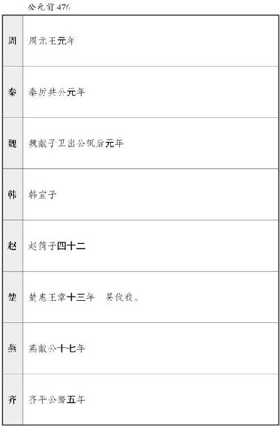
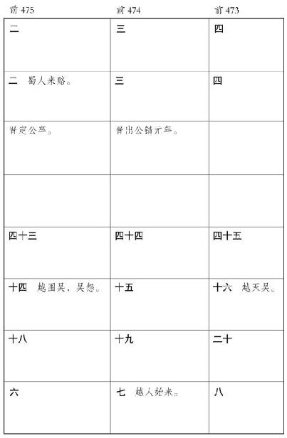
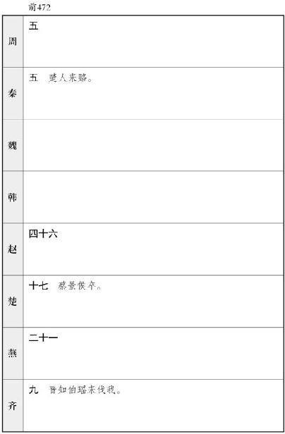
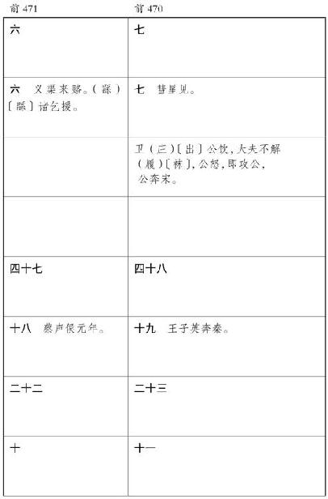
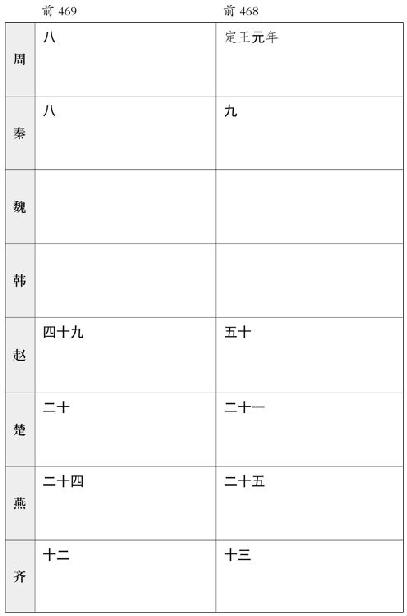
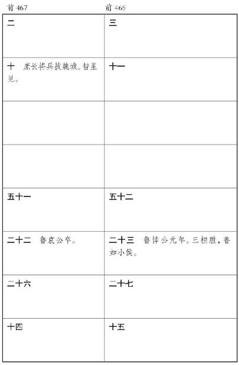
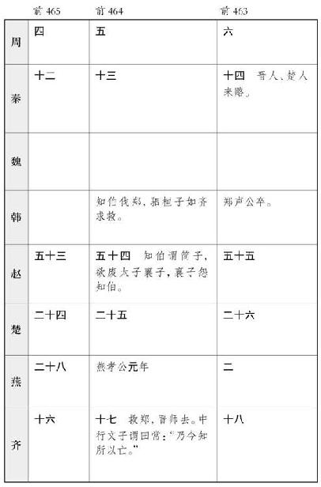
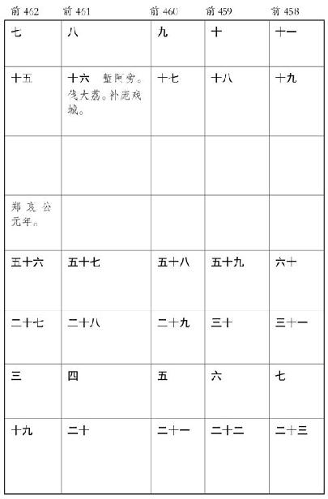
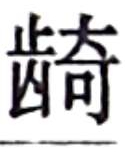
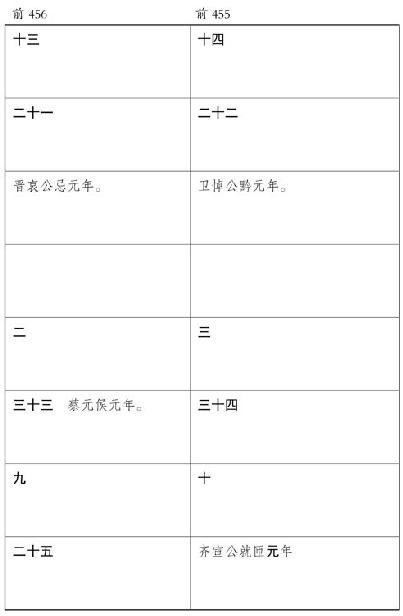
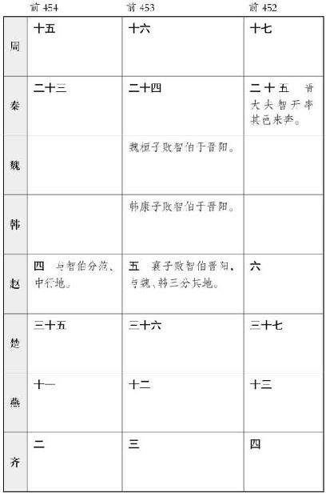
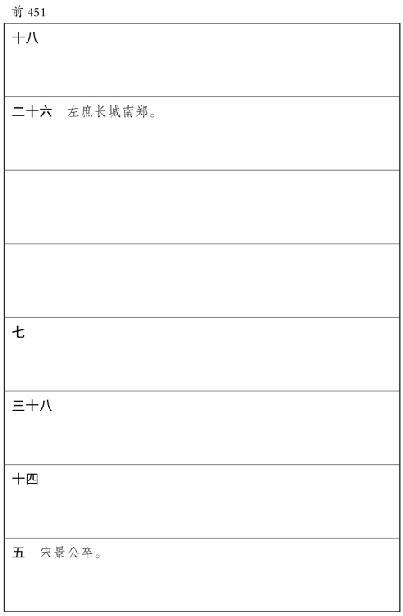
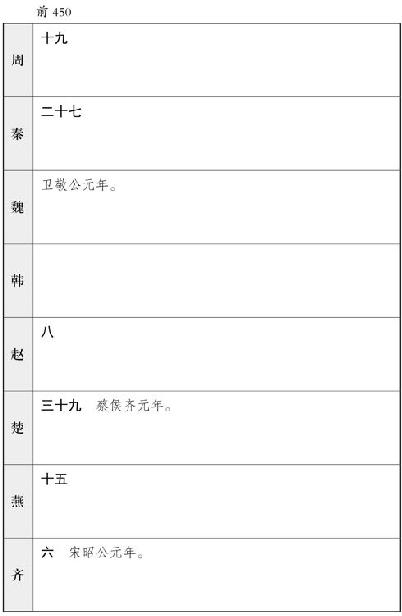
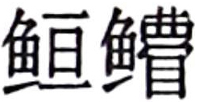
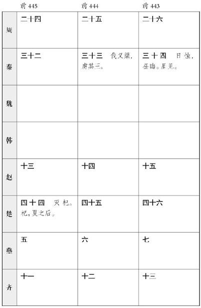
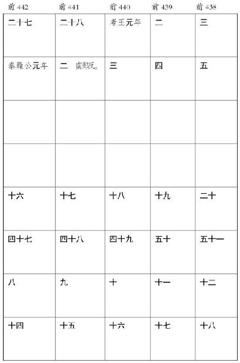
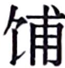
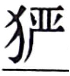

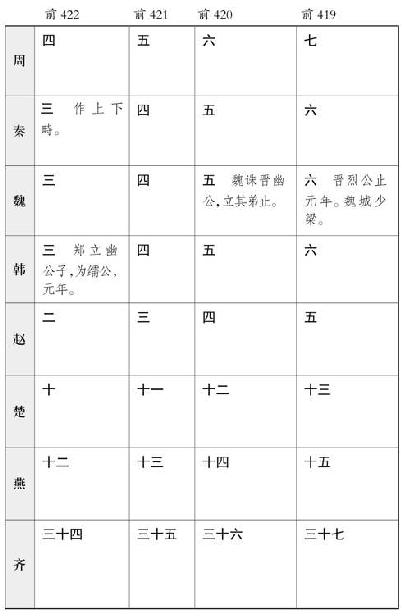
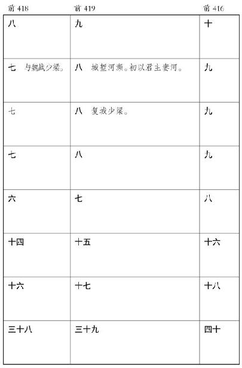
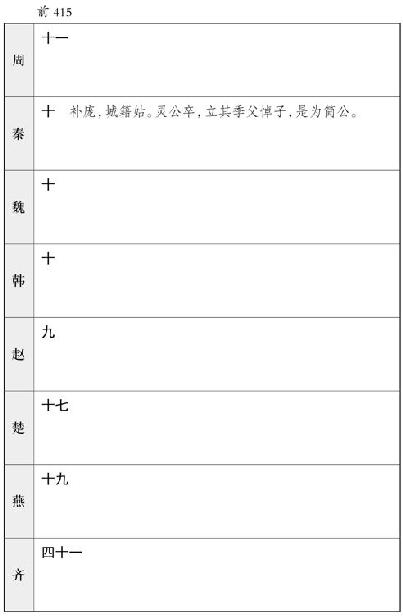
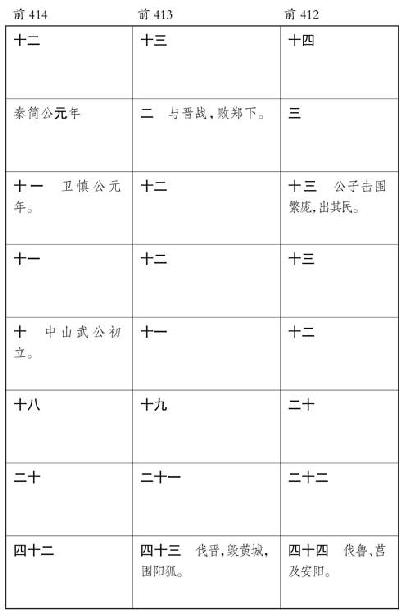
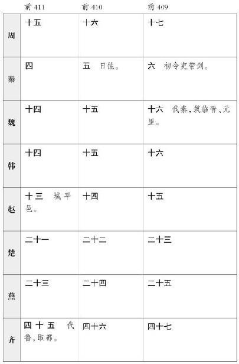
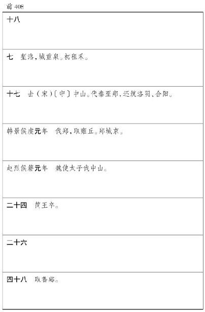
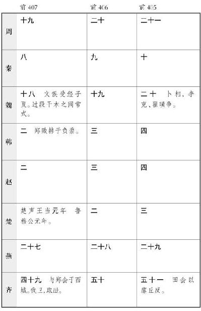
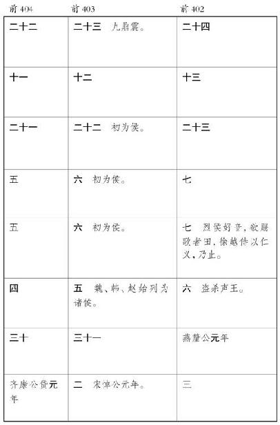
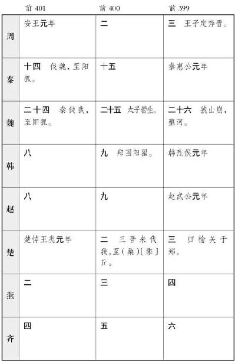
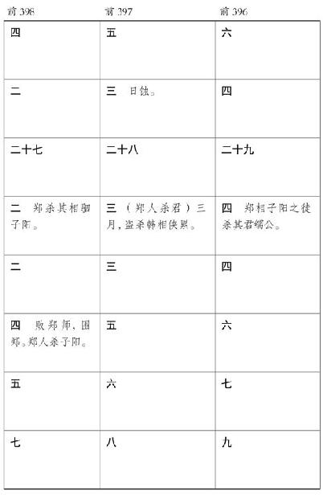
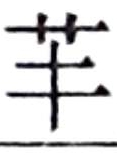
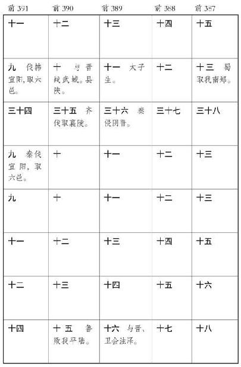
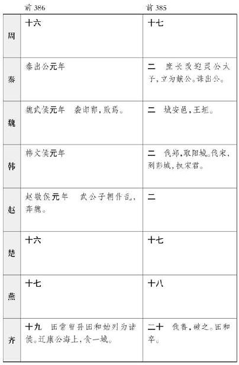
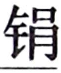
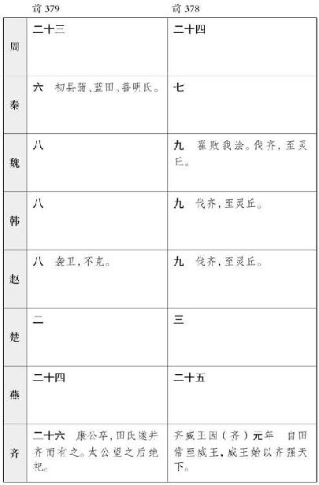
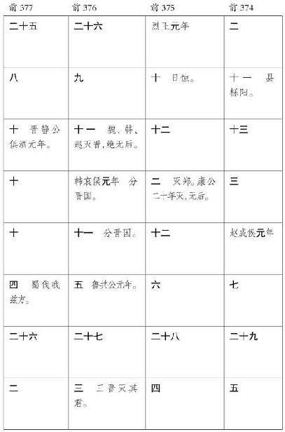
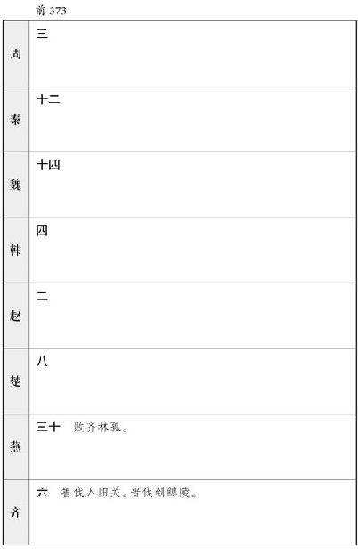

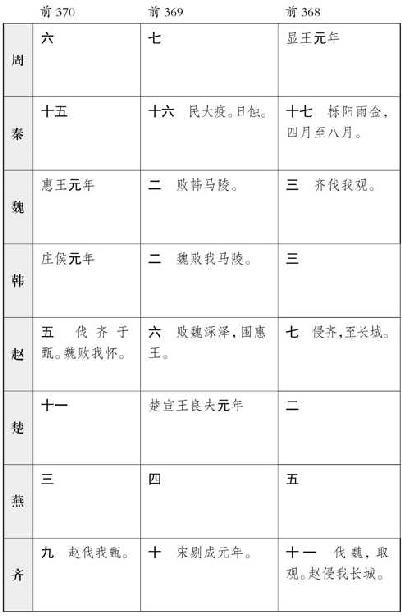
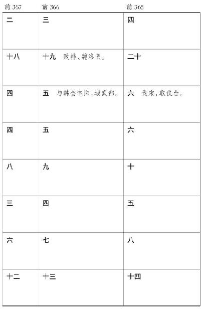
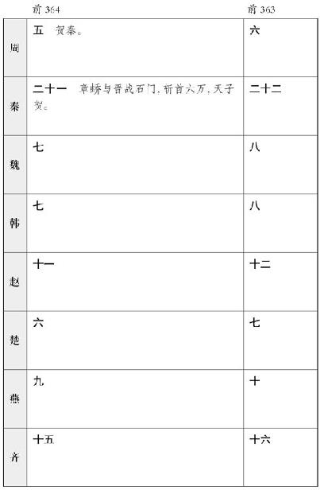
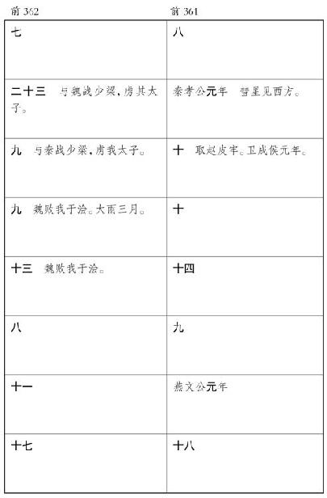
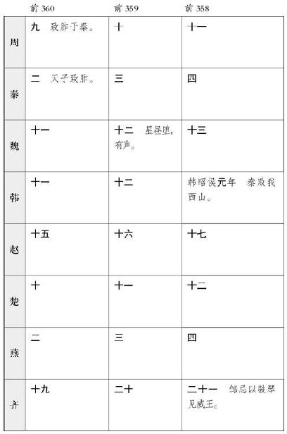
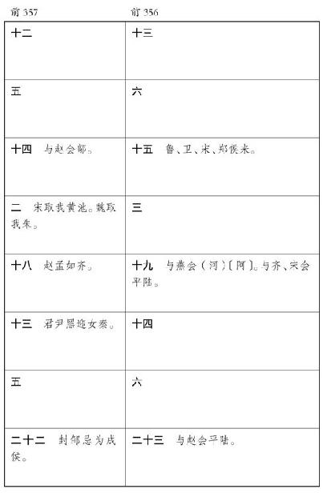
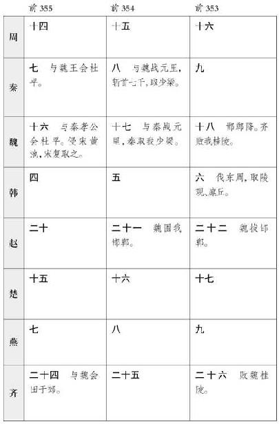

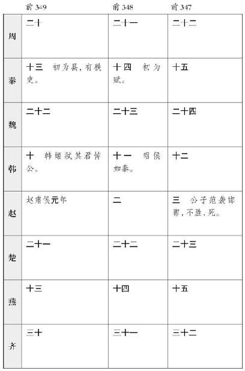
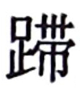
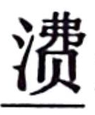
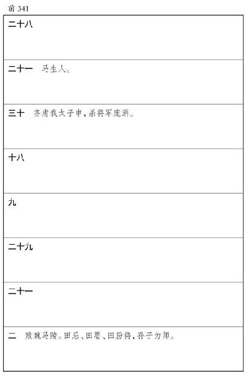
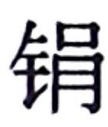
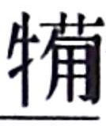
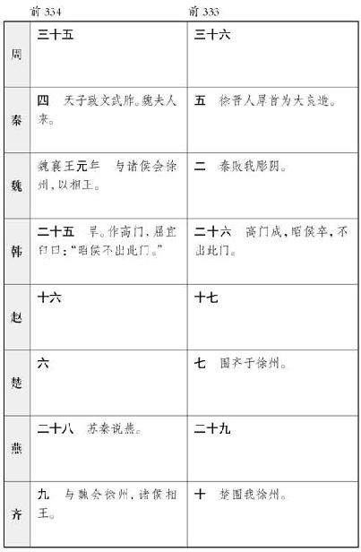
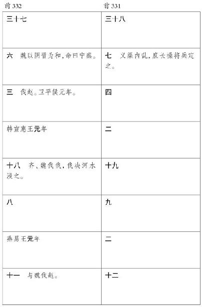


卷十六 秦楚之际月表第四
《秦楚之际月表》选自《史记》卷十六，为表中的第四篇。本表起自陈涉发难，终于刘邦称帝，表现了秦末社会动荡，天下诸侯并起，从推翻暴秦的统治到楚汉相争，最后终于走向汉家一统天下的这段历史。
太史公读秦楚之际【秦楚之际：楚是指项羽所创建的西楚政权，秦楚之际指秦二世胡亥至楚霸王项羽灭亡这一历史时期。】 ，曰：初作难，发于陈涉；虐戾灭秦，自项氏；拨乱诛暴，平定海内，卒践【践：登。】 帝祚【帝祚：帝位。】 ，成于汉家。五年之间，号令三嬗【嬗：变。】 。自生民以来，未始有受命若斯之亟【亟：迅速。】 也。
太史公读到秦楚之际的历史，认为：最先起义反秦的是陈涉；依靠残暴的手段使秦朝灭亡的是项羽；拨乱反正，诛杀强暴，平定四方，最后登上帝位，成就这项功业的是汉家。在五年的时间内，发号施令的人就换了三次。自从有了人类以来，还从未有接受天命像这么快的。
昔虞、夏之兴，积善累功数十年，德洽百姓，摄行政事，考之于天，然后在位。汤、武之王，乃由契、后稷修仁行义十余世。不期而会孟津八百诸侯，犹以为未可。其后乃放弑。秦起襄公，章于文、缪，献、孝之后，稍以蚕食六国，百有余载，至始皇乃能并冠带之伦。以德若彼，用力如此，盖一统若斯之难也。
秦既称帝，患兵革不休，以有诸侯也，于是无尺土之封，堕坏名城，销锋镝，锄豪桀，维万世之安。然王迹之兴，起于闾巷【闾巷：民间。】 ，合从讨伐，轶【轶：超过。】 于三代。乡秦之禁，适足以资贤者为驱除难耳。故愤发其所为天下雄，安在“无土不王”？此乃传之所谓大圣乎？岂非天哉，岂非天哉！非大圣孰能当此受命而帝者乎？
过去虞、夏的兴起，开创帝业的君主们都是积累善行和功绩好几十年，他们的功德恩泽百姓，他们在执行政事的时候都接受了上天的考验，然后才正式登上帝位。商汤和周武王之所以能称王，是由于从他们的祖先契和后稷开始，就修行仁义长达十几代。周武王讨伐商纣时八百诸侯没有通过邀约就在孟津会盟了，但周武王还是认为推翻商纣的条件并不成熟。等到时机成熟后，商汤才流放了夏桀，周武王才杀掉了商纣。秦国的兴起始于襄公，文公、穆公时期逐渐彰显，到了献公、孝公以后，才渐渐地蚕食关东六国，经过一百多年，到了秦始皇时期才兼并了六国。像虞、夏、商、周那样以恩德泽润百姓，像秦国这样使用强力兼并诸侯，都是经历了长期的努力才能成功的，原来统一天下是如此的艰难啊！
秦始皇称帝之后，担心战乱不能休止，是因为有诸侯的存在，因此他连一尺土地也没有分封，毁坏了有名的城池，销毁了天下的兵器，剪除了天下的豪强，他希望靠这些手段来维持万世的安定。然而帝王之业的勃兴却起于民间，各地的豪杰都联合起来攻秦，其浩大的声势超过了夏、商、周三代。过去秦朝不封诸侯、毁坏名城、销毁兵器等制度措施恰好帮助贤者排除了他们推翻秦朝的困难。所以，高祖以一个普通百姓的身份愤发而起，成为了天下的雄略之主，怎么能说“没有封土便不能成王呢”？他不就是书传上称道的大圣人吗？这难道不是天意吗，难道不是天意吗！如果不是大圣人，怎能够在这豪杰并起的时期承受天命而称帝呢？


卷十七 汉兴以来诸侯王年表第五
《汉兴以来诸侯王年表》选自《史记》卷十七，为表中的第五篇。本表起自高祖元年，终至武帝太初四年，展现了汉兴百年之间各诸侯王的废立及分削情况。
太史公曰：殷以前尚【尚：久远。】 矣。周封五等：公、侯、伯、子、男。然封伯禽、康叔于鲁、卫，地各四百里，亲亲之义，褒【褒：褒奖。】 有德也；太公于齐，兼五侯地，尊勤劳也。武王、成、康所封数百，而同姓五十五，地上不过百里，下三十里，以辅卫王室。管、蔡、康叔、曹、郑，或过或损。厉、幽之后，王室缺，侯伯强国兴焉，天子微，弗能正。非德不纯，形势弱也。
汉兴，序二等。高祖末年，非刘氏而王者，若无功上所不置而侯者，天下共诛之。高祖子弟同姓为王者九国，唯独长沙异姓，而功臣侯者百有余人。自雁门、太原以东至辽阳，为燕、代国；常山以南，大行左转，度河、济，阿、甄以东薄海，为齐、赵国；自陈以西，南至九疑，东带江、淮、谷、泗，薄会稽，为梁、楚、淮南、长沙国。皆外接于胡、越。而内地北距山以东尽诸侯地，大者或五六郡，连城数十，置百官宫观，僭于天子。汉独有三河、东郡、颍川、南阳，自江陵以西至蜀，北自云中至陇西，与内史凡十五郡，而公主列侯颇食邑其中。何者？天下初定，骨肉同姓少，故广强庶孽，以镇抚四海，用承卫天子也。
太史公认为：殷朝以前的历史已经很久远了。周朝时期的爵位有五个等级：公、侯、伯、子、男。然而伯禽在鲁地、康叔在卫地，受封的封地各四百里，这是为了表示亲近亲属的情谊，褒扬创建了功德的人；在齐地分封太公吕望，让他兼有五个诸侯的封地，这是对他为国家操劳而表示尊重。周武王、成王、康王时受封的诸侯有数百个，而其中同姓的诸侯就有五十五个，他们的封地最大的不超过百里，最小的不少于三十里，要依靠他们来辅佐和捍卫王室。后来，管、蔡、康叔、曹、郑各诸侯的封地，有的超出了规定，有的遭到了削减。厉王、幽王之后，王室亏损，那些侯、伯却变为强国逐渐兴起，而周天子的势力微弱，无力拨正。这并不是周王室的品德不好，主要是由于势力已经衰败了。
汉朝兴起之后，将爵位分为两等，功大的封为王，功小的封为侯。在高祖末期，曾立下誓约，不是刘氏宗室而封王的，或者没有功劳、不是皇帝所封置而封侯的，天下的人都可以共同讨伐他们。那时高祖的子弟和同姓宗室封王的有九个，只有长沙王是异姓王，而有功劳的臣子被封为侯的有一百多位。自雁门、太原以东至辽阳一带属于燕国、代国；自常山以南，由太行山向东，过黄河、济水，从东阿、甄城以东一直延伸到海边，属于齐国、赵国；自陈县以西，南至九疑山，往东长江、淮河、谷水、泗水一带，临近会稽山，属于梁国、楚国、淮南国、长沙国。这些诸侯国都与匈奴和越族相接。而内地往北至崤山以东，都属于诸侯的封地，有些大的诸侯拥有五到六个郡，几十座城池相连，他们独立设置的百官和宫观已经超过了规定，几乎与天子相同。当时，汉王室仅仅占有三河、东郡、颍川、南阳，自江陵以西到蜀郡，北自云中到陇西，再加上内史，共有十五个郡。而公主的封地多数都在这些地区。为什么呢？天下才初步平定，能封王封侯的同姓人少，因此要广泛增强汉室子弟的力量，用来镇抚天下，以及辅佐和捍卫汉朝廷。
汉定百年之间，亲属益疏，诸侯或骄奢，忕【忕：习惯。】 邪臣计谋为淫乱，大者叛逆，小者不轨于法，以危其命，殒身亡国。天子观于上古，然后加惠，使诸侯得推恩分子弟国邑，故齐分为七，赵分为六，梁分为五，淮南分三，及天子支庶子为王，王子支庶为侯，百有余焉。吴楚时，前后诸侯或以适zhé【适：通“谪”。】 削地，是以燕、代无北边郡，吴、淮南、长沙无南边郡，齐、赵、梁、楚支郡名山陂海咸纳于汉。诸侯稍微，大国不过十余城，小侯不过数十里，上足以奉贡职，下足以供养祭祀，以蕃辅京师。而汉郡八九十，形错诸侯间，犬牙相临，秉其厄塞地利，强本干，弱枝叶之势，尊卑明而万事各得其所矣。
臣迁谨记高祖以来至太初诸侯，谱其下益损之时，令后世得览。形势虽强，要之以仁义为本。
汉朝平定天下不过百年的时间，亲属之间日益疏远，一些诸侯骄奢淫逸，习惯了奸佞之臣的诱惑，暗中策划叛乱的行动，动作大的成为了叛党，动作小的不遵循国家的法度，因而危及到自身的性命，最后导致身死国亡。天子考察了上古政治的得失，于是采取了增加诸侯恩惠的方法，促使他们把自己的恩泽推广出去，将国邑分给自己的子弟，所以齐被分为了七个国家，赵被分为了六个国家，梁被分为了五个国家，淮南被分为了三个国家，到了天子的旁支庶子被封王、王子的旁支庶子被封侯的，就达到了一百多个。吴楚动乱的时期，前后有些诸侯由于受到谪罚而减削封地，所以燕、代没有北部边郡，吴、淮南、长沙没有南部边郡，齐、赵、梁、楚的支郡和有名的山、海都由中央政府直接管辖。诸侯们的势力逐渐被削弱，大的封国只拥有十几个城，小的封侯只占有几十里地，使他们向上足以进献贡赋，对下足以供奉祭祀，用以辅卫京师。而汉中央政府所设置的郡共有八九十个，错综地分布在诸侯国之间，就像犬牙一样相互交错地衔接，朝廷掌握着险要的关塞和有利的地势，从而增强了中央政府的力量，减弱了诸侯国的势力，使尊卑关系明确了，所有的事情也就各得其所了。
作为臣子，我司马迁慎重地记录了自高祖以来到太初时期的各诸侯国的史实，写下了他们后来的势力加强或削弱的情况，使后人得以阅览，从而从中得到教训。现在朝廷形势即使很强盛，但仍要将仁义作为治国的根本。


卷十八 高祖功臣侯者年表第六
陈仁锡：“高祖功臣侯者一百四十三，至文帝之世，存者一百二十五，至武帝时，存者七十一，当时之守先典待旧勋，孰得孰失，皆可失矣。”
方苞：“汉武以列侯莫求从军，坐酎金失侯者百余人。迁不敢斥言其过，故微词以见义，言古之道，笃于仁义以安勋旧，而今任法刻削，不同于古，帝王疏礼异务，各以自就其功绪，岂可混而一之乎？刺武帝用一切之法以侵夺群下，而成其南诛北讨之功也。”
《高祖功臣侯者年表》选自《史记》卷十八，为表中的第六篇。本表通过对高祖时期功臣侯者命运的关注，意在总结其失侯的原因，从一个侧面对汉朝统治者及有功之臣进行警示。
太史公曰：古者人臣功有五品，以德立宗庙定社稷曰“勋”，以言曰“劳”，用力曰“功”，明其等曰“伐”，积日曰“阅”。封爵之誓曰：“使河如带【带：衣带。】 ，泰山若厉【厉：磨刀石。】 ，国以永宁，爰【爰：于是。】 及苗裔。”始未尝不欲固其根本，而枝叶稍陵夷【陵夷：衰微。】 衰微也。
余读高祖侯功臣，察其首封，所以失之者，曰：异哉所闻！《书》曰“协和万国”，迁于夏商，或数千岁。盖周封八百，幽厉之后，见于《春秋》。《尚书》有唐虞之侯伯，历三代千有余载，自全以蕃卫天子，岂非笃于仁义，奉上法哉？汉兴，功臣受封者百有余人。天下初定，故大城名都散亡，户口可得而数者十二三。是以大侯不过万家，小者五六百户。后数世，民咸归乡里，户益息，萧、曹、绛、灌之属或至四万，小侯自倍，富厚如之。子孙骄溢，忘其先，淫嬖。至太初百年之间，见侯五，余皆坐法陨命亡国，秏矣。罔亦少密焉，然皆身无兢兢于当世之禁云。
太史公说：古代臣子的功勋分为五等，凭借德行创建基业、安定国家的，称之为“勋”；凭借进言立功的，称之为“劳”；凭借武力立功的，称之为“功”；表明功劳等级的，称之为“伐”；计算他们资历长短的，称之为“阅”。封爵的誓言上说：“即使黄河像衣带一样细了，泰山像磨刀石一样小了，也要使封国永远安宁，恩泽延续到子孙后代。”当初开始封爵，未尝不是想巩固国家的根本，但到了后来，它的枝叶却逐渐衰败、微弱下去了。
朱东润：“读史之功，莫甚于读表，其所得往往有出于纪传世家以外者。余读《高祖功臣侯年表》，知诸侯功状，史迁皆有所本以资移录，其间存亡攻守之故，迁亦未能尽悉。”
我读了高祖对功臣封侯的记载，考察当初分封的爵位到后来之所以丧失的情况，认为：实际情况与传闻截然相反！《尚书·尧典》上说“要使万国的诸侯协调和睦”，这“万国的诸侯”变迁不断，到夏、商时期，已经有千年之久了。周初时期曾分封了八百个诸侯，到了幽王、厉王之后的诸侯的史迹，出现在《春秋》上。《尚书》上所记载的唐尧、虞舜所封的侯伯，历经夏、商、周三代，已经有一千多年了，他们还能保全自己的封爵，并能够作为屏藩来保卫周天子，这难道不是由于他们能够坚守仁义，遵循周天子的法规的缘故吗？汉朝在创建之后，受封的功臣有一百多人。当时，天下才初步安定，原本大城名都中的人口大多逃亡在外，留存下来的只有十分之二三。所以，大的诸侯的封邑不超过一万户，小的诸侯的封邑只有五六百户。过了几代之后，老百姓重新返回乡里，户口逐渐繁衍，萧何、曹参、周勃、灌婴这些人的后代，有的封邑的人口的数量竟能达到四万，甚至小侯的封户也成倍地增长，因而他们的财富也迅速汇集起来。但是，他们的子孙后代却因此而骄奢自满，忘记了他们的祖先在创业时的艰难，专干一些邪恶放荡的事情。到武帝太初之时，只过了百年的时间，保存下来的侯爵只剩下五个，其余的都因犯法而丧命亡国，全都耗费殆尽了。国家的法网日渐严谨是其中一个原因，但也是因为他们没有认认真真地对待当世的禁令。
居今之世，志古之道，所以自镜也，未必尽同。帝王者各殊礼而异务，要以成功为统纪，岂可绲【绲：同“混”。】 乎？观所以得尊宠及所以废辱，亦当世得失之林也，何必旧闻？于是谨其终始，表其文，颇有所不尽本末。着其明，疑者阙之。后有君子，欲推而列之，得以览焉。
生活在当今之世，要记住古人处世的道理，是因为可以引以为鉴，当然，古今的做法未必全都相同。作为帝王的人要各自有不同的礼法和政务，最重要的是应该以成功的经验作为准则，哪能混同一致呢？分析诸侯王能够得到尊重、宠幸或遭受废弃、屈辱的原因，也是在当今时代能够取得成功或遇到失败的道理所在，何必专门去寻找古代的传闻呢？于是，我便仔细地考察了诸侯王被废立的始末，以表格的形式列出，并附以文字说明，但其中也有一些没能够详尽地记录下来。我只记述了那些清楚明确的材料，那些有疑问的地方就没有记录。如果后世有人想推究和阐述高祖分封功臣的原委，这个表就可以提供参考。


卷十九 惠景间侯者年表第七
《惠景间侯者年表》出自《史记》卷十九，为表中的第七篇。本表展示了惠景间九十三个侯国的存亡兴废情况。
太史公读列封至便侯【便侯：即吴浅，于孝惠帝元年受封为便侯。便，县名，在今湖南永兴。】 曰：有以也夫！长沙王者，着令甲【令甲：汉代法令以甲、乙、丙、丁的次序编排。令甲就是法令中的第一篇。】 ，称其忠焉。昔高祖定天下，功臣非同姓疆土而王者八国。至孝惠时，唯独长沙全，禅五世，以无嗣绝，竟无过，为藩守职，信矣。故其泽流枝庶，毋功而侯者数人。及孝惠讫孝景间五十载，追修【追修：清理前事。】 高祖时遗功臣，及从代来，吴楚之劳，诸侯子弟若肺腑，外国归义【归义：归化。】 ，封者九十有余。咸表始终，当世仁义成功之著者也。
太史公读有关列侯分封的资料，读到便侯时说到：所有的事情都是有原因的！长沙王被封为诸侯王，记录在法令的第一篇中，他的忠诚受到了赞扬。当初高祖平定天下，功臣之中不是皇室同姓宗亲而裂土受封的诸侯王有八个。到孝惠帝时，只剩下长沙王保全了他的封国，接连传承五世，最后因为没有后嗣才绝封，自始自终都没有犯什么过错，作为朝廷的藩守，尽职尽责，事情果真如此。所以他的德业能使旁系子孙都能享受到恩惠，没有创建功勋而受封为侯的就有数人。从孝惠帝之初到孝景帝之末，期间五十多年，追录高祖时遗漏未封的功臣，以及追随孝文帝从代国入继大统的旧臣，孝景帝时期在平定吴楚七国之乱的战事中立下了显著功劳的将相官员，身为皇室骨肉至亲的诸侯子弟，前来投顺的外邦异族的首领等等，先后受封为侯的有九十多人。现在把他们受封传承的情况列表记载如下，这些都是当代有仁义、建大功的人物中比较突出的。


卷二十 建元以来侯者年表第八
《建元以来侯者年表》选自《史记》卷二十，为表中的第八篇。本表所表现的主要是那些征伐匈奴、东越、南越等四夷的功臣。
太史公曰：匈奴绝和亲，攻当路塞【当路塞：正当要道的边塞。】 ；闽越擅伐，东瓯ōu请降。二夷交侵，当盛汉之隆，以此知功臣受封侔【侔：相当，相等。】 于祖考【祖考；祖先。】 矣。何者？自《诗》《书》称三代“戎狄是膺，荆荼【荼：舒。】 是征”，齐桓越燕伐山戎，武灵王以区区赵服单于，秦缪用百里霸西戎，吴楚之君以诸侯役百越。况乃以中国一统，明天子在上，兼文武，席卷四海，内辑【辑：协和。】 亿万之众，岂以晏然不为边境征伐哉！自是后，遂出师北讨强胡，南诛劲越，将卒以次封矣。
太史公说：匈奴断绝和亲后，攻打边境上的险要关塞；闽越凭借武力，擅自攻打东瓯，逼迫东瓯请降。这两支外夷交相不断地侵扰边境，即使是在汉朝最兴隆的时期也是如此，由此可以推知功臣受到分封的数量应该很多，当与高祖开国时相等。为什么会这样呢？自从《诗经》《尚书》说夏、商、周三代“抵挡抗击北方的戎狄，讨伐处罚南方的荆舒”以来，齐桓公曾经越过燕国去攻打山戎，赵武灵王依靠小小的赵国就降服了匈奴单于，秦穆公凭借百里傒称霸西戎，吴、楚两国的国君凭着诸侯的身份却能驱使百越。何况是一个统一的国家，上有圣明的天子统治，又同时具备文武之才，平定四海，使国内亿万百姓都团结和睦、安居乐业，面对外夷的侵扰怎能够安然无事，而不去经营边疆、出兵征伐呢？从此以后，汉朝就出兵北方，讨伐凶狠的匈奴，又出兵南方，消灭了强大的南越，将士们最终也都依据功劳受到了封赏。


后进好事儒者褚先生【褚先生：褚少孙，是汉代元帝、成帝间的一个博士。】 曰：太史公记事尽于孝武之事，故复修记孝昭以来功臣侯者，编于左方，令后好事者得览观成败长短绝世之适，得以自戒焉。当世之君子，行权【权：变通，不守成规，见机行事。】 合变，度【度：揣摩，揣测。】 时施宜，希世【希世：迎合世俗。】 用事，以建功有土封侯，立名当世，岂不盛哉！
观其持满【持满：谨慎地保住兴旺发达的家业。】 守成【守成：守住已经获得的成就。】 之道，皆不谦让，骄蹇【骄蹇：骄傲自大。】 争权，喜扬声誉，知进不知退，终以杀身灭国。以三得之【以三得之：指上文“行权合变，度时施宜，希世用事”。】 ，及身【及身：在自己这一辈。】 失之，不能传功于后世，令恩德流子孙，岂不悲哉！
夫龙雒侯曾为前将军，世俗顺善，厚重谨信，不与政事，退让爱人。其先起于晋六卿之世。有土君国以来，为王侯，子孙相承不绝，历年经世，以至于今，凡百余岁，岂可与功臣及身失之者同日而语之哉？悲夫，后世其诫之！
晚辈儒士褚先生说：太史公在本篇的记事截止到孝武帝，因此我又撰写记录了孝昭帝之后功臣封侯的情况，编在下方，这是为了让后世的晚辈能够看到那些功臣们、传世久远者的经验，以及那些失败者、很短时间内就将爵位断送了的教训，使自己引以为戒。当世的君子，能够不守成规而见机行事，能够审时度势而随机应变，能够迎合世俗而受到重用，从而建功立业，封地封侯，在当世扬名，好不兴盛至极啊！
然而观察他们谨慎地保住兴旺的家业和取得的成就的表现，一点也不谦虚谨慎，而是骄傲自大，争权夺力，喜欢宣扬自己的名声，只知前进，不留任何退路，最终都被杀，封国也随即灭绝。依靠以上三种途径获得的侯位，在自己这一代就丢掉了，没能将功业传给子孙后人，让子孙们也能沐浴恩德，这不是很大的悲哀吗？
龙雒侯韩曾出任前将军一职时，他能够顺应世俗，做善事，忠厚、谨慎，不参与政事，遇事谦和退让，爱护别人。他的先祖原本是春秋时晋国的六卿之一。自从拥有封地成为诸侯以来，子孙相继为王为侯，子子孙孙世代相传，不曾断绝，经过了多少年岁和世代，直到今天，算起来已经有一百多年了，怎么能够和在自己这一辈就失去爵位、封地的功臣们相提并论呢？实在是悲哀啊，后世的人们要引以为戒！

卷二十一 建元以来王子侯者年表第九
陈仁锡：“‘盛哉天子之德’即所谓‘推私恩’也，其说盖自主父偃发之。元光侯者七，元朔侯者一百二十七元狩侯者二十五，元鼎侯者三，当时之分封诸侯子弟施行次第，皆可知矣。”
《建元以来王子侯者年表》选自《史记》卷二十一，为表中的第九篇。“王子侯”，即本表中所列王侯皆因王子而侯，也就是这些人并无功可言。本表共列出了武帝所封的王子侯一百六十二人。
制诏御史：“诸侯王或欲推私恩【私恩：汉初诸侯王死后，由嫡子继承其土地爵位，而其他的儿子没有土地分封。汉武帝采纳主父偃的建议，令诸侯王把土地分封给其余众子为侯国，这样一个诸侯国被分为若干个小诸侯国，实力大为削弱。】 分子弟邑者，令各条上，朕且临定其号名。”
太史公曰：盛哉，天子之德！一人有庆，天下赖之。
皇帝诏令御史大夫说：“诸侯王有打算推恩于私亲而把封地分给子弟的，让他们各自把意见分条呈上，我将亲自制定这些子弟的封号。”
太史公说：“天子的恩德，真伟大啊！皇帝有可贺之事，天下人都能承蒙恩泽。”


卷二十二 汉兴以来将相名臣年表第十
《汉兴以来将相名臣年表》选自《史记》卷二十二，为表中的最后一篇。本表起自高祖元年，终于成帝鸿嘉元年。相、将为国家安定之关键，内要靠相，外要靠将，对于巩固大汉王朝的天下有重要意义。本表所展现的就是汉兴百年间国家所经的大事及诸将相的变化情况，可看作是整个汉代社会历史的一个缩影。
此表无序。


卷二十三 礼书第一
本篇介绍了礼仪制度的相关问题。崇尚礼乐是华夏民族有别于周边民族的显著特征，相传周公为礼乐的创制者。礼仪作为一种维系社会各阶层等级秩序的制度，在中华文明的发展进程中起到了相当重要的作用。春秋战国时期礼崩乐坏，孔子提出了恢复周礼的主张，并成为儒家思想的重要内容。汉武帝提倡儒术，受时代风尚的影响，司马迁将《礼书》列为八书之首。本篇大量引用先秦儒家典籍中的文字，司马迁在期间穿插议论，层层深入，反复强调礼仪对社会生活的重要作用。
太史公曰：洋洋【洋洋：众多、盛美的样子。】 美德乎！宰制万物，役使群众，岂人力也哉？余至大行【大行：秦官名，主管礼仪。】 礼官，观三代损益，乃知缘人情而制礼，依人性而作仪，其所由来尚矣。
人道经纬万端，规矩无所不贯，诱进以仁义，束缚以刑罚，故德厚者位尊，禄重者宠荣，所以总一海内而整齐万民也。人体安驾乘，为之金舆【金舆：古代车由三大部分组成，上为车盖，中间的车身为舆，下为车轮。此处泛指车。】 错衡以繁其饰；目好五色，为之黼fǔ黻【黼黻：白与黑相交谓之黼，黑与青相交谓之黻。】 文章【文章：青与赤相交谓之文，赤与白相交谓之章。】 以表其能；耳乐钟磬，为之调谐八音以荡其心；口甘五味，为之庶羞【庶羞：泛指美味食品。羞，肉类食品。】 酸咸以致其美；情好珍善，为之琢磨圭璧以通其意。故大路越席【越席：蒲草席。】 ，皮弁布裳【皮弁布裳：以白鹿皮做冠，白缯布为裳，是天子朝服之一。】 ，朱弦洞越，大羹【大羹：又作“泰羹”，不加盐的肉汤。】 玄酒【玄酒：水。水色黑，太古时用于祭祀。】 ，所以防其淫侈，救其雕敝。是以君臣朝廷尊卑贵贱之序，下及黎庶车舆衣服宫室饮食嫁娶丧祭之分，事有宜适，物有节文。仲尼曰：“禘【禘：四时祭名。】 自既灌【灌：祭祀中的一个步骤，指以酒灌地。】 而往者，吾不欲观之矣。”
周衰，礼废乐坏，大小相逾，管仲之家，兼备三归。循法守正者见侮于世，奢溢僭差者谓之显荣。自子夏，门人之高弟也，犹云“出见纷华盛丽而说，入闻夫子之道而乐，二者心战，未能自决”，而况中庸以下，渐渍于失教，被服于成俗乎？孔子曰“必也正名”，于卫所居不合。仲尼没后，受业之徒沈湮而不举，或适齐、楚，或入河海，岂不痛哉！
太史公说：盛大的美德啊！主宰制约着世间万物，驱使支配着天下民众，难道是人力所能决定的吗？我到大行礼官的官署，考察夏、商、周三代礼制增减的情况，才知道根据人之常情来制定礼数，依据人的本性来制定仪式，这种情况由来已久了。
为人之道千头万绪，规则礼法无处不在，用仁义来诱导人们上进，用刑罚来约束人们，所以道德高尚的人地位尊贵，俸禄丰厚的人备受尊宠，以此来统一四海而使民众步调一致。人的身体乘车马感到舒适，就会在车身上装饰黄金，在横木上嵌错花纹，加上繁琐的装饰；眼睛喜欢看五彩缤纷的颜色，就会在服装上刺绣花纹和图案，使外表形态更美好；耳朵乐于听钟磐演奏的音乐，就会调和八种乐器的音律，来激荡内心的情感；口舌愿意品尝美味佳肴，就会调制出各种可口的滋味，来各尽其美；性情喜好珍贵美好之物，就会雕琢打磨精致的玉器，用来顺应自己的心意。因此天子的大辂车用蒲草做席子，鹿皮冠帽配布衣裳，红弦的琴瑟底部有孔洞，用清肉汤和淡水酒祭祀，这是因为要防止过于奢侈，改正刻意铺张的弊端。因此上至君臣朝廷尊卑贵贱的秩序，下至平民百姓的车马、服饰、起居、饮食、嫁娶、丧祭等，都有严格的等级区分，凡事都有适当的标准，万物都有节度。孔子说：“鲁国举行的天子禘祭之礼，从以酒灌地后，我就不想看下去了。”
周朝衰落以后，礼仪荒废了，乐舞失传了，各等级相互僭越，以至管仲家中娶三姓妇女为妻。遵循法规、坚守正道的人被欺侮，奢侈淫乱、僭越等级被视为显贵荣耀。像子夏这样的孔门高徒尚且说“出门看见纷繁华丽之物而感到喜悦，回来听到老师讲授大道而感到快乐，这两种令人高兴之事在内心斗争，不能决定取舍”，何况那些资质中等以下的人，逐渐失去教化，长期被世俗所浸染呢？孔子说“一定要辨正名分”，他在卫国居住时看到了许多不合礼法的事。孔子死后，那些受业门人湮没在世俗中而不能振作，有的人前往齐国、楚国，有的人迁居黄河、东海之滨，怎么能不令人痛心呢！
至秦有天下，悉内【内：通“纳”，收纳。】 六国礼仪，采择其善，虽不合圣制，其尊君抑臣，朝廷济济，依古以来。至于高祖，光有四海，叔孙通颇有所增益减损，大抵皆袭秦故。自天子称号下至佐僚及宫室官名，少所变改。孝文即位，有司议欲定仪礼，孝文好道家之学，以为繁礼饰貌，无益于治，躬化【躬化：亲自施行。】 谓何耳，故罢去之。孝景时，御史大夫晁错明于世务刑名，数干谏孝景曰：“诸侯藩辅，臣子一例，古今之制也。今大国专治异政，不禀京师，恐不可传后。”孝景用其计，而六国畔逆，以错首名，天子诛错以解难。事在《袁盎》语中。是后官者养交安禄而已，莫敢复议。
今上即位，招致儒术之士，令共定仪，十余年不就。或言古者太平，万民和喜，瑞应辨至，乃采风俗，定制作。上闻之，制诏御史曰：“盖受命而王，各有所由兴，殊路而同归，谓因民而作，追俗为制也。议者咸称太古，百姓何望？汉亦一家之事，典法不传，谓子孙何？化【化：教化。】 隆者闳博，治浅者褊狭，可不勉与！”乃以太初之元改正朔，易服色，封太山【太山：即泰山。】 ，定宗庙百官之仪，以为典常，垂之于后云。
到秦始皇统一天下以后，全部接纳了东方六国的礼仪，选择其中好的方面加以采纳，虽然不合于古代圣王的制度，却尊崇君主、抑制臣僚，朝廷上下井然有序，依照了古代沿袭下来的礼仪。到了汉高祖时期，光复四海，叔孙通对礼仪稍加增加或删减，大体上都是沿袭的秦朝原有的礼制。从天子的称号到左右辅佐的官僚以及宫室和官职的名称，很少有改变的地方。孝文帝即位以后，有关部门商议要重新制定礼仪，那时孝文帝喜好道家无为学说，认为用繁琐的礼仪只能粉饰外表，对治理天下没有帮助，通过身体力行来教化别人有什么意义呢！因此废止了这件事。孝景帝时期，御史大夫晁错精通谋身治世之术和刑法名实之学，多次求见景帝进谏说：“诸侯王是天子屏障和辅助，与臣僚同列于朝廷，这是从古到今通用的制度。现在大的诸侯国割据一方，施行与朝廷相异的政策，不到京城汇报情况，恐怕不能再让这些封国继续传给诸侯王的后代了。”孝景帝采纳了他的计策，六个诸侯国反叛了朝廷，把诛杀晁错放在起兵理由的第一条，皇帝杀死了晁错来解除危难。这件事记载在《袁盎晁错列传》里。从此以后，做官的人只热衷于培养交情、安享俸禄罢了，不敢再议论礼制了。
当今皇上即位以后，招揽通晓儒学的士人，命令他们共同制定礼仪，十多年也没有做成。有的人说，古时候天下太平，万民和睦安乐，祥瑞应验之事层出不穷，于是采集各地风情民俗，制定礼仪。皇上听到这些话，诏令御史大夫说：“大凡接受天命而称王的人，各自都有兴起的原因，走的是不同的道路，结果却是一样的，是因为顺应民众的实际情况来制定礼仪，遵循民众的风俗习惯来创建制度。议论的人都说礼仪制度太久远了，今天的百姓还能看到什么呢？汉朝也是刘氏一家的事业，如果典章法令不能流传下去，又能对子孙后代说些什么呢？教化深远崇高的，对后世的影响也恢宏广博；治民目光浅薄的，在人们心目中的地位也偏颇狭隘，怎么能不以此自勉呢！”于是从太初元年起，改定历法，变更服饰颜色，在泰山举行封禅大典，确定宗庙祭祀和百官朝贺的礼仪，以此作为朝廷常用的典章制度，流传给后人作为典范。
礼由人起。人生有欲，欲而不得则不能无忿，忿而无度量则争，争则乱。先王恶其乱，故制礼义以养人之欲，给人之求，使欲不穷于物，物不屈于欲，二者相待而长，是礼之所起也。故礼者养也。稻粱五味，所以养口也；椒【椒：香料名。】 兰芬茝【茞：即白芷，一种香草。】 ，所以养鼻也；钟鼓管弦，所以养耳也；刻镂文章，所以养目也；疏房床笫几席，所以养体也：故礼者养也。
君子既得其养，又好其辨也。所谓辨者，贵贱有等，长少有差，贫富轻重皆有称也。故天子大路越席，所以养体也；侧载臭【臭：气味，这里指香气。】 茝，所以养鼻也；前有错衡，所以养目也；和鸾【和鸾：车马铃。】 之声，步中《武》《象》，骤中《韶》《濩》，所以养耳也；龙旗九斿【斿：同“旒”。古代旌旗边缘上悬垂的装饰品。】 ，所以养信也；寝兕【寝兕：以犀牛皮为席。】 持虎【持虎：以勐兽皮文饰倚较及伏轼。】 ，鲛韅弥龙【弥龙：复盖着龙纹。】 ，所以养威也。故大路之马，必信至教顺，然后乘之，所以养安也。孰知夫出死要节【要节：希求名节。】 之所以养生也。孰知夫轻费用之所以养财也，孰知夫恭敬辞让之所以养安也，孰知夫礼义文理【文理：即礼。文是礼之饰，理是礼之质。】 之所以养情也。
礼制因人而产生。人们生来就有欲望，有欲望却得不到满足就不可能没有怨恨，怨恨毫无限度时就会引发争斗，有争斗就产生祸乱。古代圣王讨厌这种混乱的局面，所以制定礼仪道义来滋养人的欲望，满足人的需求，使欲望不会因为物质不足而受到限制，物质也不会因为欲望的增长而显得匮乏，两者相互协调而能长久，这就是礼制产生的原因。因此礼仪就是一种调养之法。稻米、高粱、五味食品，是用来调养口舌之欲的；香料、鲜花、芳草，是用来调养嗅觉之欲的；钟鼓、管弦演奏的音乐，是用来调养听觉之欲的；精雕细刻的花纹，是用来调养视觉之欲的；宽敞的房间和床榻、几案、坐席，是用来调养身体之欲的：所以礼仪就是一种调养之法。
君子的欲望已经得到了调养，又愿意受礼仪区别的制约。所谓区别，是指高贵的人和低贱的人要讲等级，年长的人和年幼的人要有差别，贫穷的人、富有的人、卑贱的人、尊贵的人都有与身分相称的待遇。所以天子乘大辂车用蒲草做席子，用来调养身体之欲的；车子两侧摆放香草，用来调养嗅觉之欲；车子前面有嵌错花纹的横木，用来调养视觉之欲；和铃与鸾铃的声响，慢走时与《武》《象》的节奏相符，快走时与《韶》《濩》的节奏相符，用来调养听觉之欲；龙旗的边缘装饰有九旒，用来培养天子诚信之心；车轮装饰着伏卧犀牛的形状，伏轼上装饰有虎皮，马肚带以鲨鱼皮制成，车轭雕刻成龙的样子，用来培养天子威严之气。所以大辂车的马匹，一定驯化到温顺的程度，然后才可以驾驭它，用来保证天子人身安全。谁能知道人们出生入死追求名节正是为了保养身体呢？哪个知道人轻视费用就是为了聚集财富呢？哪个知道恭敬辞让就是为了保证平安呢？谁知道学习礼仪、仁义、文章、道理正是为了调养性情呢？
人苟生之为见，若者必死；苟利之为见，若者必害；怠惰之为安，若者必危；情胜之为安，若者必灭。故圣人一之于礼义，则两得之矣；一之于情性，则两失之矣。故儒者将使人两得之者也，墨者将使人两失之者也。是儒墨之分。
治辨之极也，强固之本也，威行之道也，功名之总也。王公由之，所以一天下，臣诸侯也；弗由之，所以捐社稷也。故坚革利兵不足以为胜，高城深池不足以为固，严令繁刑不足以为威。由其道则行，不由其道则废。楚人鲛革犀兕，所以为甲，坚如金石；宛之钜铁施【施：鍦，即矛。】 ，钻如蜂虿【蜂虿：蜂虿之尾。虿，蝎类毒虫。】 ，轻利剽遬【剽遬：剽悍迅速。遬，同“速”。】 ，卒如熛风【熛风：疾速如飞。】 。然而兵殆于垂涉，唐昧死焉；庄蹻起，楚分而为四参。是岂无坚革利兵哉？其所以统之者非其道故也。汝颍以为险，江汉以为池，阻之以邓林，缘之以方城。然而秦师至鄢郢，举若振藁。是岂无固塞险阻哉？其所以统之者非其道故也。纣剖比干，囚箕子，为炮格，刑杀无辜，时臣下懔然，莫必其命。然而周师至，而令不行乎下，不能用其民。是岂令不严，刑不陖【陖：同“峻”。】 哉？其所以统之者非其道故也。
人以苟且偷生为目的，就必定死亡；以苟且获利为追求，就必定受害；以懒惰懈怠为安逸，就必定危险；以冲动固执为安分，就必定毁灭。所以圣人用礼仪和道义来规范一切，那么趋利避害两方面就都得到了；若一概任情尽性，那么两方面就都会失掉。所以儒家要使人两方面都得到，墨家要使人两方面都失掉。这就是儒、墨两家的区别。
礼是圣人治理天下的最高准则，国家强盛巩固的根本方式，君主威严顺利施行的最佳途径，人们成就功业声名的总体纲要。王公遵循礼治，就可以凭借它统一天下，使诸侯臣服；不遵循礼治，就会失掉国家。所以坚硬的铠甲和锋利的兵器不能保证取得胜利，高耸的城墙和深深的护城河不能保证防守坚固，严苛的法令和繁杂的刑罚不能保证树立权威。遵循这一道理就能通行无阻，不遵循这一道理就将失败。楚国人用鲨鱼皮、犀牛皮制作铠甲，坚硬得如同金属和石头；用宛城的大铁矛进攻，钻刺时就像蜜蜂和蝎子的尾巴一样，锋利而飘忽，士兵像暴风一样迅勐。然而楚国的军队兵败垂涉，大将唐昧死在了那里；庄蹻起兵，楚国分裂成四国。这难道是因为没有坚硬的铠甲、锋利的武器吗？是由于统治手段没有遵循礼治的缘故。楚国以汝水和颍水为天险，以长江和汉水为护城河，以邓林阻挡敌人，以长城为疆界。然而秦国的军队到达了鄢、郢二都，发兵打仗就像摇动枯树那样容易。这难道是因为没有坚固的要塞和险要的阻隘吗？是由于统治手段没有遵循礼治的缘故。商纣王剖了比干的心，囚禁了箕子，创制了炮烙的酷刑，用来杀害无辜的人，当时的臣民战战兢兢，没有一个人能确保自己的性命。然而周国的军队一到，商纣王的命令在下面就无法通行了，他也无法驱使民众为其效力了。这难道是因为政令不严，刑罚不重吗？是由于统治没有礼治之道的缘故。
古者之兵，戈矛弓矢而已，然而敌国不待试而诎。城郭不集，沟池不掘，固塞不树，机变不张，然而国晏然不畏外而固者，无他故焉，明道而均分之，时使【时使：役使以时，如同说使民以时。】 而诚爱之，则下应之如景响。有不由命者，然后俟之以刑，则民知罪矣。故刑一人而天下服。罪人不尤其上，知罪之在己也。是故刑罚省而威行如流，无他故焉，由其道故也。故由其道则行，不由其道则废。古者帝尧之治天下也，盖杀一人刑二人而天下治。传曰：“威厉而不试，刑措而不用。”
天地者，生之本也；先祖者，类之本也；君师者，治之本也。无天地恶生？无先祖恶出？无君师恶治？三者偏亡，则无安人。故礼，上事天，下事地，尊先祖而隆君师，是礼之三本也。
故王者天太祖，诸侯不敢怀，大夫士有常宗【常宗：《礼记·丧服小记》说：“别子为祖，继别为宗。”大夫、士虽各自为祖，但自有常宗，不能越宗而祭。】 ，所以辨贵贱。贵贱治，得之本也。郊畴乎天子，社至乎诸侯，函及士大夫，所以辨尊者事尊，卑者事卑，宜钜者钜，宜小者小。故有天下者事七世，有一国者事五世，有五乘之地者事三世，有三乘之地者事二世，有特牲而食者【有特牲而食者：特牲即牛，有一牛而耕食者为庶人。】 不得立宗庙，所以辨积厚者流泽广，积薄者流泽狭也。
古代的兵器，不过是戈、矛、弓、箭这几种罢了，然而敌国却不等尝试使用时就屈服了。城郭不需要集结兵力戍守，护城河不需要挖掘加深，坚固的要塞不需要增建，智谋权变不需要采用，然而国家却平安无事不畏惧外敌而且防守稳固，在这里没有其他缘故，只因为能明白礼义之道并且能公平地处理人际关系，按时令役使民众并且能真心地爱护他们，那么臣民就会像影子一样跟随他。有不服从命令的人，然后再用刑罚对待他，那么民众就知道哪些是犯罪行为了。所以处罚一个人而能使天下的人都顺服。犯罪的人不责怪官长，是因为他们知道错在自己。因此刑罚少而权威仍然像流水一样通达于臣下，在这里没有其他缘故，只因为是遵循礼治之道的缘故。所以遵循这一道理就通行，不遵循这一道理就失败。古代帝王尧在治理天下时，大概只是杀了一个人，处罚了两个人，天下就安定太平了。书上说：“威严虽然勐厉但是不可轻易采用，刑罚虽然设置但是不可轻易施行。”
苍天大地，是生命的本源；先人祖宗，是家族的本源；君主师长，是国家安定的本源。没有苍天大地怎么能有生命？没有先人祖宗怎么能有后代？没有君主师长怎么能有国家的安定？这三个方面偏废了，就没有安居乐业之人了。因此礼仪就是对上敬奉苍天，对下敬奉大地，同时尊敬先人祖宗并且尊崇君主师长，这是礼仪的三项根本原则。
所以称王之人把上天与始祖相配加以祭祀，诸侯不敢怀有这个想法，大夫和士也各自有支脉的先祖，这样是为了区分高贵与卑贱。高贵的人和卑贱的人得以安定，这样就得到了礼治的根本。郊外祭天的仪式只有天子才有资格主持，土地神的祭祀由诸侯主持，也包括士大夫在内，这样是为了规定尊贵的人敬奉尊贵的神灵，卑贱的人敬奉卑贱的神灵，适合做大事的人去做大事，适合做小事的人去做小事。所以统治天下的天子可以供奉七代祖先的牌位，统治一国的诸侯可以供奉五代祖先的牌位，拥有五乘土地的大夫可以供奉三代祖先的牌位，拥有三乘士地的士人可以供奉两代祖先的牌位，普通百姓不允许设立宗庙，这样是为了区别道德高深的人恩泽流布广阔，道德浅薄的人恩泽流布狭窄。
大飨上玄尊【玄尊：盛玄酒的酒樽，又称水尊，这里指玄酒。】 ，俎【俎：木制有足的器皿，祭祀时盛祭品。】 上腥鱼，先大羹，贵食饮之本也。大飨上玄尊而用薄酒，食先黍稷而饭稻粱，祭哜【哜：品尝。】 先大羹而饱庶羞，贵本而亲用也。贵本之谓文，亲用之谓理，两者合而成文，以归太一，是谓大隆。故尊之上玄尊也，俎之上腥鱼也，豆之先大羹，一也。利爵弗啐也，成事俎弗尝也，三侑之弗食也，大昏【昏：同“婚”。】 之未废齐【废齐：祭神。废，通“发”。齐，同“斋”。】 也，大庙之未内尸也，始绝之未小敛【敛：同“殓”。】 ，一也。大路之素帱也，郊之麻絻，丧服之先散麻，一也。三年哭之不反也，《清庙》之歌一倡而三叹，县一钟尚拊膈，朱弦而通越，一也。
凡礼始乎脱，成乎文，终乎税【税：有所舍弃。】 。故至备，情文俱尽；其次，情文代胜；其下，复情以归太一。天地以合，日月以明，四时以序，星辰以行，江河以流，万物以昌，好恶以节，喜怒以当。以为下则顺，以为上则明。
大祭祀飨神，崇尚玄水，俎实崇尚生鱼，先进献清肉汤，表示重视饮食的本源。大祭祀飨神崇尚玄酒而饮用薄酒，食物崇尚黄米和小米而吃稻米和高粱做成的米饭，祭尸时先上清肉汤而饱腹的是美味佳肴，表示既重视饮食的本源又兼顾实际效用。重视本源是为了展现祭祀的形式，就像事物的外在纹饰；兼顾实用是为了表达祭祀的理念，就像事物的内在脉络，这两点相互结合而构成礼仪的外在形式，归结为天地的本源，这就是最隆重的典礼。因此樽酒崇尚玄酒，俎实崇尚上生鱼，豆羹崇尚不加调料的清肉汤，道理是一样的。佐食的人不小口喝酒，一饮而尽；卒哭之祭有献无酢，参加祭祀的人除尸之外，不品尝俎实；祝与佐食的人劝尸用饭，三劝之后，礼数已成，尸停止用饭，婚礼在祭神之前，祭祀时迎尸进太庙之前，亲人刚去世还没有入殓之前，道理是一样的。大辂车搭配白丝帷帐，郊外祭天时戴麻布帽子，穿着丧服时腰间散扎着麻带，道理是一样的。三年守孝期间痛哭不注重腔调，《清庙》之歌由一个人领唱并且有三个人咏叹，敲打悬挂的大钟时会撞击木制的钟格，装有红色丝弦的琴瑟下有孔洞，道理是一样的。
大凡礼仪都是从疏脱开始，加上修饰而完成，最后有所取舍地流传下去。所以最完备的礼仪，应该是内在情感和外在形式全都具备；其次，是内在情感与外在形式交替占上风；再次，是内在情感完全归结为天地的本源。天地根据礼仪之道相互协调，日月根据礼仪之道彰显光明，四季根据礼仪之道井然有序，星辰根据礼仪之道周行不殆，江河根据礼仪之道奔流不止，万物根据礼仪之道繁荣昌盛，好恶根据礼仪之道克制调节，喜怒根据礼仪之道处置恰当。用礼仪治理臣下就会和顺，用礼仪规范君上就会英明。
太史公曰：至矣哉！立隆以为极，而天下莫之能益损也。本末相顺，终始相应，至文有以辨【辨：指能辨别贵贱等级尊卑。】 ，至察有以说。天下从之者治，不从者乱；从之者安，不从者危。小人不能则也。
礼之貌诚深矣，坚白同异【坚白同异：战国时辩论的两个著名命题。坚白论认为坚石非石，白马非马。同异论认为万物毕同毕异。】 之察，入焉而弱。其貌诚大矣，擅作典制褊biǎn陋之说，入焉而望。其貌诚高矣，暴慢恣睢，轻俗以为高之属，入焉而队【队：同“坠”。】 。故绳诚陈，则不可欺以曲直；衡诚悬，则不可欺以轻重；规矩诚错，则不可欺以方员；君子审礼，则不可欺以诈伪。故绳者，直之至也；衡者，平之至也；规矩者，方员之至也；礼者，人道之极也。然而不法礼者不足礼，谓之无方之民；法礼足礼，谓之有方之士。礼之中，能思索，谓之能虑；能虑勿易，谓之能固。能虑能固，加好之焉，圣矣。天者，高之极也；地者，下之极也；日月者，明之极也；无穷者，广大之极也；圣人者，道之极也。
以财物为用，以贵贱为文，以多少为异，以隆杀【隆杀：隆盛、减杀。】 为要。文貌繁，情欲省，礼之隆也；文貌省，情欲繁，礼之杀也；文貌情欲相为内外表里，并行而杂，礼之中流也。君子上致其隆，下尽其杀，而中处其中。步骤驰骋广骛不外，是以君子之性守宫庭【宫庭：这里是中的意思，就是常居中道，不偏不倚。】 也。人域是域，士君子也。外是，民也。于是中焉，房皇周浃，曲得其次序，圣人也。故厚者，礼之积也；大者，礼之广也；高者，礼之隆也；明者，礼之尽也。
太史公说：真完美啊！创立完备的礼仪作为调和人际关系的最高准则，而且天下没有人能够增加或删减。礼仪的根本与分支相互承接，结尾与开始相互照应，文采飞扬又能彰显差别，明察秋毫又能使人和悦。天下人遵从礼治就太平，不遵从礼治就混乱；遵从礼治就安定，不遵从礼治就危险。平民百姓无法以此为法则。
礼仪看上去确实很深奥了，关于“坚白”与“同异”的辩论，进入礼仪的范畴就显得苍白无力了。它看上去确实很宏大了，擅自创设典章制度、发表偏激浅陋言论的人，进入礼仪的范畴就只能望而却步了。它看上去确实很高远了，那些残暴、傲慢、放纵而以蔑视礼俗为了不起的人，进入礼仪的范畴就变得渺小卑微了。所以墨绳画好以后，就不能再以曲直相欺骗了；秤杆持平以后，就不能再以轻重相欺骗了；圆规直尺摆好位置以后，就不能再以方圆相欺骗了；君子认真地审视礼法，就不能再以诈伪相欺骗了。所以墨绳是直线的最高标准；秤杆是轻重的最高标准；圆规直尺是方圆的最高标准；礼仪是为人处事的最高标准。然而那些不遵从礼仪的人不值得以礼相待，称之为不法之民；遵从礼仪的人应该以礼相待，称之为守法之士。做事合于礼法，能够思考探究，称之为勤于思考；能考虑问题而不随便改变观点，称之为持之以恒。既能考虑问题又能坚持道义，再加上内心真正喜欢这样做，那就是最伟大的圣人了。苍天，是高远的极点；大地，是低下的极点；日月，是光明的极点；无边的宇宙，是广大的极点；圣人，是遵循礼仪之道的极点。
礼仪的应用表现在财物的使用上，文彩表现在贵贱的等级上，差异表现在礼节的繁简上，要领表现在礼遇的厚薄上。外在文彩看上去纷繁，性情欲望能够有所收敛，这是礼仪隆重的表现；外在文彩看上去简约，性情欲望却十分繁盛，这是礼仪消糜的表现；外在文彩和性情欲望互为里表，二者有机地结合在一起，这就是最合乎礼仪的表现。君子向上能以大礼彰显隆重的威仪，向下能以小礼展现简约的本性，又能以中礼做得恰到好处。轻重缓急都不超出礼仪的范畴，所以君子的本性就是持守中庸之道。人生在世做事不超越礼义的界限，这就是兼具学识与道德的士君子。做事超出礼义的界限，这就是普通人了。在这些人中间，徘徊周旋，对错都能依照礼仪的程序去做，这就是圣人。所以道德高尚的人，是积累礼义的结果；人格伟大的人，是广施礼义的结果；地位崇高的人，是重视礼义的结果；精明智慧的人，是严格按照礼义做事的结果。
卷三 目录
卷二十四 乐书第二
卷二十五 律书第三
卷二十六 历书第四
卷二十七 天官书第五
卷二十八 封禅书第六
卷二十九 河渠书第七
卷三十 平准书第八
卷三十一 吴太伯世家第一
卷三十二 齐太公世家第二
卷三十三 鲁周公世家第三
卷三十四 燕召公世家第四
卷三十五 管蔡世家第五
卷三十六 陈杞世家第六
卷三十七 卫康叔世家第七
卷三十八 宋微子世家第八
卷三十九 晋世家第九
卷四十 楚世家第十
卷四十一 越王句践世家第十一
返回总目录
卷二十四 乐书第二
本篇介绍了大量古代音乐知识，也保存了大量先秦时期关于音乐的论述。本篇论点是“乐者乐也”，即音乐就是快乐，同时又提出不可以听淫靡的音乐，所以听音乐的目的是为了快乐，但不单纯是为了享乐。篇中大量引用了《礼记·乐记》中的文字，也有后人增补的文字，所以总体上显得有些杂乱。乐是礼乐文明的重要内容，也是儒家推行教化的重要手段，所以《乐书》被列于八书第二篇。
太史公曰：余每读《虞书》，至于君臣相敕【敕：告诫，勉励。】 ，维是几安，而股肱不良，万事堕huī【堕：同“隳”，毁坏。】 坏，未尝不流涕也。成王作颂，推己惩艾【艾：通“刈”，创伤、苦痛。】 ，悲彼家难【家难：国家的难事。这里指文王囚羑里，武王伐纣。】 ，可不谓战战恐惧，善守善终哉？君子不为约则修德，满则弃礼，佚【佚：通“逸”，安逸。】 能思初，安能惟始，沐浴膏泽【膏泽：肉之肥者为膏。泽亦指膏。】 而歌咏勤苦，非大德谁能如斯！传曰“治定功成，礼乐乃兴”。海内人道益深，其德益至，所乐者益异。满而不损则溢，盈而不持则倾。凡作乐者，所以节乐。君子以谦退为礼，以损减为乐，乐其如此也。以为州异国殊，情习不同，故博采风俗，协比声律，以补短移化，助流政教。天子躬于明堂临观，而万民咸荡涤邪秽，斟酌饱满，以饰厥性。故云《雅》《颂》之音理而民正，嘄噭之声兴而士奋，郑卫之曲动而心淫。及其调和谐合，鸟兽尽感，而况怀五常【五常：人的五种常行，指父义、母慈、兄友、弟恭、子孝。】 ，含好恶，自然之势也？
治道亏缺而郑音兴起，封君世辟，名显邻州，争以相高。自仲尼不能与齐优遂容于鲁，虽退正乐以诱世，作五章以刺时，犹莫之化。陵迟【陵迟；迟缓的样子。】 以至六国，流沔沈佚，遂往不返，卒于丧身灭宗，并国于秦。
太史公说：我每次读《虞书》，看到描述君臣相互告诫，因此天下稍微得到安定，然而左右的辅佐之臣不够贤良，所有的事业都毁坏的记载时，没有一次不感动得落泪。周成王作《周颂》，推究自己所受的创伤，为国家所遭遇的祸难而感到悲哀，怎可说他不是小心谨慎、善始善终的帝王呢？君子不因为穷困而修养道德，志得意满就背弃礼义，应该在安逸的时候想到当初创业的艰难，在安定的时候想到创始时的艰难，沐浴在富裕之中应该歌颂勤奋的品质，不是具有崇高道德的人谁能像这样啊！书上说“统治安定大功告成，礼乐制度于是产生”。天下为人之道越深奥，帝王的品德越崇高，他所认为欢乐的事情就越不同于常人。水满了却不减少就会流出来，时机成熟了而不能把握就会跌倒。大凡创作音乐的原因，是为了节制欢乐。君子把谦虚退让视为礼节，把削减欲望视为乐事，音乐产生的意义大概就像这样。由于地域不同，人的性情习俗也不同，所以广博地采集各地民风习俗，与声律相协调，用来弥补不足和移风易俗，帮助推行政令与教化。天子亲自在明堂观看乐舞，可以使民众洗清内心的邪恶与污秽，调和饱满无缺的人性，用来整饬其性情。所以说《雅》《颂》的音乐奏起，民众就会持守正道；高亢嘹亮的音乐演奏起来，战士就会振奋精神；郑国、卫国的靡靡之音响起，人们就意乱情迷了。等到音调和谐以后演奏，飞鸟走兽也都会为之动容，更何况是心怀五常、明辨爱憎的人了，这就是自然之势吧？
治国之道匮乏，郑国淫邪的音乐就流行起来，封国之君世袭之主，在邻近州郡名声显扬，却争着欣赏互比高低。自从孔子无法与齐国俳优在鲁国并存，即使隐退后整理雅正的音乐来诱导世人，创作五章来讥刺时政，还是没有办法感化世人。慢慢地到了六国时代，人们随波逐流而沉湎于逸乐，于是一去不回头了，最后自身败亡，宗庙被毁，国家被秦国吞并了。
秦二世尤以为娱。丞相李斯进谏曰：“放弃《诗》《书》，极意声色，祖伊所以惧也；轻积细过，恣心长夜，纣所以亡也。”赵高曰：“五帝、三王乐各殊名，示不相袭。上自朝廷，下至人民，得以接欢喜，合殷勤，非此和说不通，解泽不流，亦各一世之化，度时之乐，何必华山之騄耳【騄耳：古代骏马名，周穆王八骏之一。】 而后行远乎？”二世然之。
高祖过沛诗《三侯之章》，令小儿歌之。高祖崩，令沛得以四时歌舞宗庙。孝惠、孝文、孝景无所增更，于乐府【乐府：古代管理音乐的官署。】 习常肄旧而已。
至今上即位，作《十九章》，令侍中李延年次序其声，拜为协律都尉。通一经之士不能独知其辞，皆集会五经家，相与共讲习读之，乃能通知其意，多《尔雅》之文。
汉家常以正月上辛【上辛：每月中的第一个辛日。】 祠太一甘泉，以昏时夜祠，到明而终。常有流星经于祠坛上。使僮男僮女七十人俱歌。春歌《青阳》，夏歌《朱明》，秋歌《西暤》，冬歌《玄冥》。世多有，故不论。
秦二世更是把音乐当成娱乐。丞相李斯进谏说：“放弃《诗》《书》，把心思花在享受声色上，这正是古代贤臣祖伊担心的事情；忽视细小过错的积累，在漫漫长夜里放纵心意，这正是暴君纣王灭亡的原因。”赵高说：“五帝和夏、商、周的开国之君各自崇尚不同的音乐，用来表示礼法不相承袭。上自朝廷，下至人民，能够相处得见面时欢欣喜悦，相处得情意深厚，除了这种音乐就不能使和谐愉悦的感情得以沟通，也不能使上级布施的恩泽得以流行，这也都是各自时代所具有的风尚，王者会根据时代的不同来选择音乐，为什么一定要有华山的騄耳宝马然后才去走远路呢？”秦二世认为他说得很对。
高祖路过故乡沛县时作了《三侯之章》的诗歌，让小孩学着唱。高祖逝世时，朝廷命令沛县一年四季都要在祭祀宗庙时以此诗为歌舞乐曲。孝惠帝、孝文帝、孝景帝在位时都没有任何增加和更改，在乐府里也只是像往常一样演练罢了。
到当今皇上即位以后，作《郊祀歌十九章》，让侍中李延年按次序谱曲，任命他为协律都尉。仅通晓一部经书的学者不能独自解释诗歌的含意，朝廷把通晓五经的学者全部召集起来，相互研究、诵读，才能明白其中的意思，其中大多是出自《尔雅》的文字。
汉朝通常在正月上旬辛日在甘泉宫祭祀太一之神，从黄昏时分起在夜间开始祭祀，到天亮以后结束，祭祀的时候经常有流星划过祭坛的上空。安排童男童女七十人一起唱歌。春天唱《青阳》，夏天唱《朱明》，秋天唱《西暤》，冬天唱《玄冥》。这些诗歌世间多有，所以不在这里讨论。
又尝得神马渥洼水中，复次以为《太一之歌》。歌曲曰：“太一贡兮天马下，沾赤汗兮沫【沬：洗脸。】 流赭。骋容与兮跇【跇：超越，跨越。】 万里，今安匹兮龙为友。”后伐大宛得千里马，马名“蒲梢”，次作以为歌。歌诗曰：“天马来兮从西极，经万里兮归有德。承灵威兮降外国，涉流沙兮四夷服。”中尉汲黯进曰：“凡王者作乐，上以承祖宗，下以化兆民。今陛下得马，诗以为歌，协于宗庙，先帝百姓岂能知其音邪？”上默然不说。丞相公孙弘曰：“黯诽谤圣制，当族【族：刑罚名，即灭族之刑。】 。”
皇上曾在渥洼水中捕获一匹神马，又配曲为《太一之歌》。歌词说：“太一神的恩赐啊，天马降临人间，身上沾满红色的汗啊，嘴里流出褐色的唾沫。从容驰骋啊，一跃过万里，现在什么能与之匹敌啊，龙是它的朋友。”后来征伐大宛得到了千里马，马名叫“蒲梢”，配曲成为歌。歌词说：“天马来啊，从遥远的西方，经历万里啊，归顺有德的皇帝。承蒙神威啊，降服外国，跨越流沙啊，四方蛮夷宾服。”中尉汲黯进谏说：“大凡称王的人创作音乐，对上用来继承祖宗的恩德，对下用来教化亿万臣民。现在陛下得到几匹马，作诗用来歌唱，并且用于宗庙祭祀，先帝和百姓怎么能理解这种音乐呢？”皇上沉默不高兴。丞相公孙弘说：“汲黯诽谤皇上的作品，应当处以灭族之刑。”
凡音之起，由人心生也。人心之动，物使之然也。感于物而动，故形于声；声相应，故生变；变成方，谓之音；比【比：随着、顺着。】 音而乐之，及干戚羽旄【干戚羽旄：干指盾牌，戚指斧，二者是周武王所制《武》舞中舞人所执的器具；羽指雄性山鸡尾，旄指旄牛尾，二者是文舞中舞人所执的器具。】 ，谓之乐也。乐者，音之所由生也，其本在人心感于物也。是故其哀心感者，其声噍以杀【噍以杀：促急而迅速减弱。】 ；其乐心感者，其声啴以缓【啴以缓：宽缓。】 ；其喜心感者，其声发以散；其怒心感者，其声粗以厉；其敬心感者，其声直以廉【直以廉：边、角分明，绝无邪曲的意思。】 ；其爱心感者，其声和以柔。六者非性也，感于物而后动，是故先王慎所以感之。故礼以导其志，乐以和其声，政以壹其行，刑以防其奸。礼乐刑政，其极一也，所以同民心而出治道也。
凡音者，生人心者也。情动于中，故形于声，声成文谓之音。是故治世之音安以乐，其正和；乱世之音怨以怒，其正乖；亡国之音哀以思，其民困。声音之道，与正通矣。宫为君，商为臣，角为民，征为事，羽为物。五者不乱，则无惉懘之音矣。宫乱则荒，其君骄；商乱则捶，其臣坏；角乱则忧，其民怨；征乱则哀，其事勤；羽乱则危，其财匮。五者皆乱，迭相陵，谓之慢。如此则国之灭亡无日矣。郑卫之音，乱世之音也，比于慢矣。桑间濮上之音，亡国之音也，其政散，其民流，诬上行私而不可止。
大凡音律的产生，来自于人心的变动。人心的变动，是外物造成的。人心有感于物而变动，所以形成声音；声音相互呼应，所以产生变化；变化形成一定的规律，就叫音律；编排音律用来娱乐，再借助武器、旗帜来表演，就叫音乐。音乐，是由音律生成的，它的根源在于人心有感于物。所以被物所感而生哀痛心情时，其声急促而且迅速减弱；心生欢乐时，其声舒慢而宽缓；心生喜悦时，其声发扬而且轻散；心生愤怒时，其声粗勐严厉；心生敬意时，其声正直清亮；心生爱意时，其声柔和动听。这六种声音并不发自人的本性，而是内心有感于物后产生的，因此古代圣王对外物的影响格外慎重。所以礼仪用来引导人们的志趣，音乐用来调和人们的声音，政令用来统一人们的行为，刑罚用来防范人们的奸邪。礼仪、音乐、刑罚、政令，它们的终极目标是一样的，都是用来统一民众的思想，从而实现天下大治。
张守节：“天有日月星辰，地有山陵河海，岁有万物成熟，国有圣贤宫观周域官僚，人有言语衣服体貌端修，咸谓之乐。”
大凡音律，是从人的内心中产生的。感情在内心震荡，因此形成声音，声音符合一定的韵律就叫音律。所以太平之世的音乐充满了安逸和快乐，其政治和谐；动荡之世的音乐充满了怨恨和愤怒，其政治混乱；将亡之国的音乐充满了悲哀和忧愁，其民众困顿。声乐音律的道理，和政治是相通的。宫声好比君主，商声好比大臣，角声好比人民，徵声好比政事，羽声好比器物。宫、商、角、征、羽五声不紊乱，就不会出现不和谐的音调。宫声紊乱音律就荒废，那么君主必定骄纵；商声紊乱音律就邪僻，那么大臣必定败坏；角声紊乱音律就忧郁，那么人民必定怨恨；徵声紊乱音律就悲哀，那么政事必定繁重；羽声紊乱音律就高危，那么财货必定匮乏。五声全都紊乱，相互交替着占据主旋律，就叫无礼。像这样的话，国家的灭亡就时日无多了。郑国、卫国的淫邪之音，是动荡之世的音乐，接近于无礼的地步了。桑间、濮上的靡靡之音，是将亡之国的音乐，其政治涣散，其百姓流亡，下级欺骗上级，徇私舞弊的行为不可制止。
凡音者，生于人心者也；乐者，通于伦理者也。是故知声而不知音者，禽兽是也；知音而不知乐者，众庶【众庶：普通百姓。】 是也。唯君子为能知乐。是故审声以知音，审音以知乐，审乐以知政，而治道备矣。是故不知声者不可与言音，不知音者不可与言乐。知乐则几于礼矣。礼乐皆得，谓之有德。德者得也。是故乐之隆，非极音也；食飨【食飨：祭祀结束后把飨神的食物供宾客享用。飨，通“享”。】 之礼，非极味也。清庙之瑟，朱弦而疏越，一倡而三叹，有遗音者矣。大飨之礼，尚玄酒而俎腥鱼，大羹【大羹：肉汁羹。】 不和，有遗味者矣。是故先王之制礼乐也，非以极口腹耳目之欲也，将以教民平好恶而反人道之正也。
人生而静，天之性也；感于物而动，性之颂【颂：容貌、外表。】 也。物至知【知：同“智”，智慧。】 知，然后好恶形焉。好恶无节于内，知诱于外，不能反己，天理灭矣。夫物之感人无穷，而人之好恶无节，则是物至而人化物也。人化物也者，灭天理而穷人欲者也。于是有悖逆诈伪之心，有淫佚作乱之事。是故强者胁弱，众者暴寡，知者诈愚，勇者苦怯，疾病不养，老幼孤寡不得其所，此大乱之道也。是故先王制礼乐，人为之节：衰麻【衰麻：丧服。此处指有关衰麻的礼仪制度。】 哭泣，所以节丧纪也；钟鼓干戚，所以和安乐也；婚姻冠笄，所以别男女也；射乡食飨，所以正交接也。礼节民心，乐和民声，政以行之，刑以防之。礼乐刑政四达而不悖，则王道备矣。
大凡音律，是从人的内心中形成的；音乐，与伦理道德是相通的。因此只知道听声音而不知道调和音律的，是禽兽；只知道听音律而不知道创作音乐的，是庶民。只有君子能通晓音乐。因此通过审察声音来理解音律，通过审察音律来理解音乐，通过审察音乐来理解政治，这样治国的方法就完备了。所以不知道声音的不可以跟他讲音律，不知道音律的不可以跟他讲音乐，理解音乐就接近于通晓礼仪了。礼仪和音乐都具备，就叫有德。仁德就是获得。因此音乐的隆盛，不在于把奏乐的规模发挥到极致；宴享礼的隆盛，不在于把食物的美味发挥到极致。演奏《清庙》的瑟，外表是红色的丝弦，底部有两个通气洞，一个人领唱三个人咏叹，音乐得以流传百世。大飨的礼仪崇尚玄酒，俎板上盛放生鱼，肉汤不加五味调料，原味得以流传百世。所以古代圣王创制礼仪和音乐，并不是为了满足口腹耳目之欲的，是要用来教导民众判断善恶的，从而返回为人的正道上来。
人生下来的时候是宁静的，这是上天赋予的本性；内心受到外物刺激而有所振动，这是本性的外在表现。外物出现而心智感知，然后喜好和厌恶的情感就会表现出来。喜好和厌恶的情感在内心毫无节制，心智就会被外物诱惑，不能回归自己最初的心境，理性就随之泯灭了。外物对人的感动是没有穷尽的，而人的喜好和厌恶毫无节制，那么外物出现人就会被同化。人被外物同化，就会通过泯灭天理来满足个人欲望。于是就产生了悖逆和诈伪的念头，也会做出淫靡佚乐和犯上作乱的事情。因此强大的胁迫弱小的，众多的欺凌寡少的，聪明的诈骗愚昧的，勇勐的摧残怯懦的，生病的人得不到照顾，老幼孤寡得不到应有的安置，这是导致天下大乱的做法。所以古代圣王创制礼乐，人们因为它而节制欲望。表达哀思时披麻哭泣，是为了节制丧事；敲打钟鼓、挥动盾牌和斧头的舞蹈，是为了调和安乐；婚姻之事和成人仪式上的冠笄之礼，是为了区别男女；乡射和宴饮之礼，是为了规范社交。礼仪节制民众的思想，音乐调和民众的愿望，政令推动礼乐的施行，刑罚防止礼乐被破坏。礼仪、音乐、刑罚、政令四个方面通达而不相抵触，那么王者的治国方略就完备了。
乐者为同，礼者为异。同则相亲，异则相敬。乐胜则流，礼胜则离。合情饰貌【饰貌：整饬行为、外貌，使其等级分明。】 者，礼乐之事也。礼义立，则贵贱等矣；乐文同，则上下和矣；好恶着，则贤不肖别矣；刑禁暴，爵举贤，则政均矣。仁以爱之，义以正之，如此则民治【民治：天下大治。】 行矣。
乐由中出，礼自外作。乐由中出，故静；礼自外作，故文。大乐必易，大礼必简【简：通“俭”，节俭。】 。乐至则无怨，礼至则不争。揖让而治天下者，礼乐之谓也。暴民不作，诸侯宾服，兵革不试，五刑【五刑：指墨、劓、宫、刖、杀五种刑罚。】 不用，百姓无患，天子不怒，如此则乐达矣。合父子之亲，明长幼之序，以敬四海之内。天子如此，则礼行矣。
大乐与天地同和，大礼与天地同节。和，故百物不失；节，故祀天祭地。明则有礼乐，幽则有鬼神，如此则四海之内合敬同爱矣。礼者，殊事合敬者也；乐者，异文合爱者也。礼乐之情同，故明王以相沿也。故事与时并，名与功偕。故钟鼓管磬【钟鼓管磬：均为乐器。】 羽龠干戚【羽籥干戚：均为舞具。文舞执羽籥，武舞持干戚。羽，雉尾；籥，短笛。干，盾牌；戚，大斧。】 ，乐之器也；诎信俯仰级兆舒疾，乐之文也。簠fǔ簋guǐ俎豆【簠簋俎豆：均为食具。盛黍稷等主食用簠、簋，盛肉食用俎、豆。】 制度文章，礼之器也；升降上下【升降上下：堂有级阶，上下堂谓为升降。】 周旋【周旋：指行礼周屈回旋。】 裼袭，礼之文也。故知礼乐之情者能作，识礼乐之文者能术。作者之谓圣，术者之谓明。明圣者，术作之谓也。
音乐是为了求同，礼仪是为了求异。求同人们就会相互亲爱，求异人们就会相互尊敬。音乐的形式太过就会使人目无尊长，从而随波逐流；礼仪的形式太过就会使人无情无义，从而众叛亲离。调合内心情感、修饰外在容貌的做法，是符合礼乐制度的事情。礼仪和道义确立了，那么高贵和低贱的等级就会明了；音乐与曲调和谐了，那么上级与下级的关系就会和顺；喜好和厌恶分明了，那么贤人和庸人就能得以区别；刑罚禁止暴行，封爵推举贤能，那么政治就会彰显公正。用仁慈去关爱百姓，用道义来规范百姓，像这样治理民众的方法就得以施行了。
音乐从人的内心深处产生，礼仪根据人的外在行为创制。音乐从内心深处产生，因此展现出宁静之态；礼仪根据外在行为创制，因此注重形式的表现。宏大的音乐必定平易，盛大的礼仪必定俭朴。音乐的作用达到极致就没有怨恨，礼仪的作用达到极致就没有争斗。拱手礼让而治理天下的圣人，就是合理运用礼乐的结果。凶暴的人不作乱，四方诸侯诚心归服，兵器和铠甲不尝试使用，各种刑罚不施行，百姓没有祸患，天子不恼怒，像这样音乐的作用就达到极致了。调合父子的亲情，明辨长幼的秩序，通过这种规范使四海之内人人相互礼敬。天子若能这样做，那么礼仪就可以推行了。
宏大的音乐与天地相互调和，盛大的礼仪与天地节度相合。相互调和，因此万物不失去生长的时令；节度相合，因此得以举行祭祀天地的活动。明处有礼乐教化，暗中有鬼神护佑，像这样四海之内的人就会和睦互敬相亲相爱了。礼仪，是用来区分等级，教导人们和睦互敬的；音乐，是用来调和不同的曲调，教导人们相亲相爱的。礼仪和音乐所表达的情感是相同的，所以英明的帝王将其相互承袭至今。因此行事与时势相符合，威名与功业相匹配。因此钟、鼓、管、磬与羽、籥、干、戚，都是表现音乐的器物；屈、伸、俯、仰与聚、散、缓、急的姿势，都是表现音乐思想的形式。簠、簋、俎、豆等礼器以及相关礼乐制度，都是表现礼仪内涵的器物；上下台阶进退有礼，行礼周屈回旋，袒露上衣或不袒露上衣，都是表现礼仪的形式。因此了解礼仪和音乐内在情感的人才能创制礼乐，通识礼仪和音乐外在形式的人才能继承传统。创制礼乐的人叫作圣人，传承礼乐思想的人叫作明者。圣明之人，指的就是既能创制又能传承的人。
乐者，天地之和也；礼者，天地之序也。和，故百物皆化；序，故群物皆别。乐由天作，礼以地制。过制则乱，过作则暴。明于天地，然后能兴礼乐也。论伦无患，乐之情也；欣喜欢爱，乐之官也。中正无邪，礼之质也；庄敬恭顺，礼之制也。若夫礼乐之施于金石【金石：泛指乐器。金，指金属制成的乐器。石，石制的乐器。】 ，越于声音，用于宗庙社稷，事于山川鬼神，则此所以与民同也。
王者功成作乐，治定制礼。其功大者其乐备，其治辨者其礼具。干戚之舞，非备乐也；亨孰【亨孰：指烹熟的食物。亨，同“烹”。孰，同“熟”。】 而祀，非达礼也。五帝殊时，不相沿乐；三王异世，不相袭礼。乐极则忧，礼粗则偏矣。及夫敦乐而无忧，礼备而不偏者，其唯大圣乎？天高地下，万物散殊，而礼制行也；流而不息，合同而化，而乐兴也。春作夏长，仁也；秋敛冬藏，义也。仁近于乐，义近于礼。乐者敦和【敦和：敦厚和同。】 ，率神而从天；礼者辨宜，居鬼而从地。故圣人作乐以应天，作礼以配地。礼乐明备，天地官矣。
天尊地卑，君臣定矣。高卑已陈，贵贱位矣。动静有常，大小大殊矣。方以类聚，物以群分，则性命不同矣。在天成象，在地成形，如此则体者天地之别也。地气上隮【隮：升。】 ，天气下降，阴阳相摩，天地相荡，鼓之以雷霆，奋之以风雨，动之以四时，暖【暖：同“暖”。】 之以日月，而百化兴焉，如此则乐者天地之和也。
音乐，是天地和顺的表现；礼仪，是天地秩序的反映。和顺，因此万物得以化育；有序，因此万物有所区别。音乐根据自然界的规律创制而成，礼仪根据人世间的规律创制而成。礼仪的创制超过限度就会混乱，音乐的创制超过限度就会粗暴。明白天地的变化，然后才能兴作礼仪和音乐。言论和人伦没有祸乱，这就是音乐的内在情感；兴高采烈相亲相爱，这就是音乐的外在表现。中和端正没有邪僻，这就是礼仪的内在本质；庄重崇敬恭谨和顺，这就是礼仪的外在形制。至于按照礼乐的精神演奏钟磬等金石乐器，超越音律曲调，用于宗庙祭祀、国家庆典，供奉山川、鬼神的形式，天子与普通百姓是一致的。
称王之人成就功业后创制音乐，国家安定后创制礼仪。功业伟大的音乐就完备，政绩彰显的礼仪就全面。拿着盾牌、斧头来跳舞，不是完备的音乐；拿着煮熟的食品来祭祀，也不是通达的礼仪。五帝生活在不同的时代，不承袭上一代的音乐；夏、商、周三代的帝王也生活在不同社会，不承袭上一代的礼仪。音乐太极端就会产生忧患，礼仪太粗略就会出现偏差。音乐敦厚就不会产生忧患，礼仪完备就不会出现偏差，岂不是只有伟大的圣人才能做到吗？苍天在上，大地在下，世间万物聚散离合，礼仪制度得以通行；天道运行不止，万民齐心协力接受教化，音乐得以兴作。春天耕作，夏天生长，这是天地仁爱的表现；秋天收获，冬天贮藏，这是天地道义的表现。仁爱接近于音乐，道义接近于礼仪。音乐敦厚和谐，遵循神灵并且顺从上天；礼仪区别等级，敬奉祖先并且顺从大地。因此圣人创制音乐与上天相应，创制礼仪与大地相配。礼仪和音乐明晰而完备，天地万物就能各司其职了。
苍天尊贵而大地卑贱，君主与大臣的关系也就因此确定了。高与低的关系已经明了，贵与贱的位置也就确定了。动与静遵循一定的规律，大与小自有不同了。同类的事物聚集在一起，不同的事物根据种类加以区分，那么它们的命运也就各不相同了。在天上出现征兆，在地下构成形体，如此说，礼仪就是天地差别的表现。大地的清气上升，天空的浊气下降，阴阳二气相互摩擦，天地之间相互震荡，用雷霆来鼓动，用风雨来浸润，用四季来运行，用日月来温暖，于是万物在此化育兴作，如此说，音乐就是天地和谐的表现。
化不时则不生，男女无别则乱登【登：形成。】 ，此天地之情也。及夫礼乐之极乎天而蟠乎地，行乎阴阳而通乎鬼神，穷高极远而测深厚，乐着太始而礼居成物。着不息者天也，着不动者地也。一动一静者，天地之间也。故圣人曰“礼云乐云”。
昔者舜作五弦之琴，以歌《南风》；夔始作乐，以赏诸侯。故天子之为乐也，以赏诸侯之有德者也。德盛而教尊【教尊：教化尊贵，受尊重。】 ，五谷时孰，然后赏之以乐。故其治民劳者，其舞行级远；其治民佚者，其舞行级短。故观其舞而知其德，闻其谥而知其行。《大章》，章之也；《咸池》，备也；《韶》，继也；《夏》，大也；殷、周之乐尽也。
天地之道，寒暑不时则疾，风雨不节则饥。教者，民之寒暑也，教不时则伤世。事【事：指徭役、兵事。】 者，民之风雨也，事不节则无功。然则先王之为乐也，以法治也，善【善：指乐。】 则行háng【行：指舞行。】 象德矣。夫豢豕为酒，非以为祸也；而狱讼益烦，则酒之流生祸也。是故先王因为酒礼，一献之礼【一献之礼：主人以酒食敬宾客，或宾客以酒食敬主人，先敬者为献，答之者为酬。敬一次为一献。】 ，宾主百拜，终日饮酒而不得醉焉，此先王之所以备酒祸也。故酒食者，所以合欢也。
天地化育不合时令，那么万物就不会生长；男女之间没有区别，那么伦理就混乱不堪；这是天与地的真实情况。至于礼乐上达于天而下接于地，运行于阴阳而通达于鬼神，身处极高极远的地方就能窥测事物的深厚，音乐产生于上天而礼仪形成于大地。生而不停息者是天，生而不动者是地。二者一动一静，是天地之间万物的本性。所以圣人常说“礼仪如何音乐如何”。
从前，舜帝制作了五弦琴，用来演唱《南风》之歌；乐官夔开始创作音乐，用来供诸侯欣赏。因此，天子创制音乐，用来赏赐诸侯中具有道德的人。道德高尚就受尊崇，五谷按时生长成熟，然后用音乐供他欣赏。所以他们统治民众使人劳苦，表演舞蹈的人数就少，排列队伍的距离就远；他们统治民众使人安逸，表演舞蹈的人数就多，排列的队伍距离就近。因此观察这些舞蹈就知道诸侯的道德水准了，听到谥号就知道他们生前的行为了。乐舞《大章》，就是彰显明德的意思；《咸池》，就是广施恩德的意思；《韶》，就是传承美德的意思；《夏》，就是发扬光大的意思；商、周两代的音乐也大多如此。
天地运行的规律，寒暑不按时就会爆发疫病，风雨无节制就会发生饥荒。教化，就是民众的寒暑，教化不按时就会伤风败俗。劳役，就是民众的风雨，劳役无节制就会一事无成。既然这样的话，那么古代圣王创制音乐，用来作为治化的象征，好的乐舞，其舞行的长短就象征着治化之德的大小。养猪造酒，不是用来制造祸害的；然而诉讼的案子越发繁多，那就是酒的普及衍生的祸事。因此古代圣王根据这种情况创制了饮酒的礼仪，献一次酒的礼仪，宾客和主人都要进行多次跪拜，这样整天饮酒也不会喝醉了，这是古代圣王用来防备饮酒闹事的办法。所以饮酒吃肉，是用来联欢的。
乐者，所以象德也；礼者，所以闭淫也。是故先王有大事【大事：指死丧。】 ，必有礼以哀之；有大福【大福：指祭祀等喜庆之事。】 ，必有礼以乐之：哀乐之分，皆以礼终。
乐也者，施也；礼也者，报也。乐，乐其所自生；而礼，反其所自始。乐章德，礼报情反始也。所谓大路者，天子之舆也；龙旗九旒，天子之旌也；青黑缘【青黑缘：指龟甲边缘上青黑色细毛。】 者，天子之葆龟【葆龟：占卜吉凶所用龟。葆，作“宝”。】 也；从之以牛羊之群，则所以赠诸侯也。
乐也者，情之不可变者也；礼也者，理之不可易者也。乐统同，礼别异，礼乐之说贯乎人情矣。穷本知变，乐之情也；着诚去伪，礼之经也。礼乐顺天地之诚，达神明之德，降兴上下之神，而凝是精粗之体，领父子君臣之节。
是故大人举礼乐，则天地将为昭焉。天地欣合，阴阳相得，煦妪复育万物，然后草木茂，区萌达【区萌达：使种子发芽。区，菽豆之类的植物发芽是曲出，称为“曲”。萌，稻稷之类的植物发芽是直出，称为“萌”。】 ，羽翮【羽翮：泛指飞鸟。羽，鸟的长毛。翮，羽的根部。】 奋，角觡【角觡：泛指走兽。角，牛羊有曰角。觡，麋鹿无曰觡。】 生，蛰虫昭稣【昭稣：指蛰伏之虫从地里出来。】 ，羽者妪伏【伏：通“孵”。】 ，毛者孕鬻，胎生者不殰【殰：胎未生而死。】 而卵生者不殈【殈：鸟卵未孵而裂开。】 ，则乐之道归焉耳。
乐者，非谓黄钟大吕【黄钟大吕：泛指一切乐器。】 弦歌干扬【弦歌干扬：泛指歌舞。干，盾牌。扬，钺。】 也，乐之末节也，故童者舞之；布筵席，陈樽俎，列笾【笾：竹制食具。】 豆，以升降为礼者，礼之末节也，故有司掌之。乐师辩乎声诗，故北面而弦；宗祝【宗祝：充当祝者的宗人。】 辩乎宗庙之礼，故后尸【尸：祭祀时，象征死者，接受祭礼的人。】 ；商祝【商祝：习商礼而为祝者。】 辩乎丧礼，故后主人。是故德成而上，蓺【蓺：同“艺”。指举行礼乐的技术性活动。】 成而下；行成而先，事成而后。是故先王有上有下，有先有后，然后可以有制于天下也。
乐者，圣人之所乐也，而可以善民心。其感人深，其风移俗易，故先王着其教焉。
音乐，是用来表现美德的；礼仪，是用来禁绝淫邪的。所以古代圣王有死丧大事，一定有相应的礼仪来表达哀思；有祭祀等祈福喜庆之事，一定有相应的礼仪来表达欣喜：哀思和欣喜的程度，都以礼的规定为准。
音乐的性质是施予；礼仪的性质是回报。音乐，用来表达心中的快乐；礼仪，要追反其始祖的功绩加以祭祀。音乐彰显美德，礼仪要反映自身得民心的情况，并追思其原因。人们所说的大辂车，是天子乘坐的车；车上装饰着缀有九条流苏的龙旗，是天子专有的旌旗；有青黑色的须髯的宝龟，是天子占卜的宝龟；跟从在后面的成群牛羊，是天子回赠诸侯的礼物。
音乐所歌颂的，是人情中永恒不变的感情；礼仪所表现的，是世事中不可移易的道理。音乐统一人的情感，礼仪区别人的等级，礼仪与音乐相合可以说是贯穿了人情的始终。深得本源，又能随时而变，是音乐的实际情况；显现真诚品德并去除虚伪的成分，是礼仪的日常法则。礼仪和音乐顺应天地的真诚，通达神明的恩德，感召天上地下的神灵，从而凝聚大小事物的主体，统领父子君臣礼仪的大节。
所以居高位者推广礼仪和音乐的教化，那么天地之间就会彰显他的明德。天地欣然交合，阴阳相得益彰，像慈母一样和煦地养育万物，然后草木就会生长茂盛，种子发芽，飞鸟振翅，走兽繁衍生息，蛰伏之虫复苏而出，鸟类孵化，兽类孕育，胎生的不至于胎死腹中，卵生的不至于卵破蛋毁，那么音乐教化的意义就归结于此了。
音乐，不是指的黄钟大吕和弦歌舞蹈，这些只是音乐的细枝末节，所以只用童仆去表演；布置筵席，陈设酒器，排列食具，按照地位的升降行礼作揖，这些只是礼仪的细枝末节，所以自有相关部门去主管。乐师能分辨歌声歌词，所以面向北方弹琴；宗祝能分辨宗庙的礼仪，所以跟在尸的后面；商祝能分辨下葬的礼仪，所以跟在丧主的后面。因此道德有所成而能居高位，技艺有所成却只能居卑位；建功立业者在先，操办琐事者在后。所以古代圣王规定上下有别，先后有序，然后可以在天下颁行礼乐制度。
音乐，是圣人所喜欢的事物，同时还可以劝民心向善。它感化众人深入内心，可以移风易俗，所以古代圣王以此彰显教化。
夫人有血气心知之性，而无哀乐喜怒之常，应感起物而动，然后心术形焉。是故志微焦衰之音作，而民思忧；啴缓慢易繁文简节之音作，而民康乐；粗厉勐起奋末广贲bēn之音作，而民刚毅；廉直【廉直：棱角分明、峭直、不肯圆通。】 经正【经正：临大事而不可夺。】 庄诚之音作，而民肃敬；宽裕肉好【肉好：形容声音洪润。】 顺成和动之音作，而民慈爱；流辟邪散狄成涤滥之音作，而民淫乱。
是故先王本之情性，稽之度数【度数：古时审定乐律，用竹管或丝弦的长短来计算并定音高。】 ，制之礼义，合生气之和，道五常之行，使之阳而不散，阴而不密，刚气不怒，柔气不慑，四畅交于中而发作于外，皆安其位而不相夺也。然后立之学【学：指国子学。】 等【等：指国子学以外的教授乐舞的机构。】 ，广其节奏，省其文采，以绳德厚也。类小大之称，比终始之序，以象事行，使亲疏贵贱长幼男女之理皆形见于乐：故曰“乐观其深矣”。
土敝则草木不长，水烦则鱼鳖不大，气衰则生物不育，世乱则礼废而乐淫。是故其声哀而不庄，乐而不安，慢易以犯节【犯节：没有节奏。】 ，流湎以忘本。广则容奸，狭则思欲，感涤荡之气而灭平和之德，是以君子贱之也。
人具有血气心智的本性，然而却没有不变喜怒哀乐的常情，本性受到外物刺激而波动，然后心思就因此而成形了。所以若情志衰微、内心焦虑的音乐兴作，民众就会思绪忧愁；安闲舒缓、繁复有节的音乐兴作，民众就会健康快乐；粗犷豪放、激昂振奋的音乐兴作，民众就会刚强坚毅；廉正耿直、庄严真挚的音乐兴作，民众就会严肃恭敬；宽洪圆润、流畅和谐的音乐兴作，民众就会仁慈友爱；放荡邪僻、散漫混乱的音乐兴作，民众就会淫乱不羁。
因此古代圣王以民众的性情为根本，考察世间的准则和道理，创制礼仪和道义，调和阴阳二气，引导五行运转，使其阳气不散失，阴气不闭塞，刚气不恼怒，柔气不惊恐，四种气息在内部交融并在外部发作，都按着各自位置运行而不相侵夺。然后把制成的这种乐立于学官等机构，使相教授，扩大它的节奏，简省它的文采，以高尚的道德为准绳。区分大小乐器的名称，排列音律终始的顺序，用来衡量人们行为的标准，使亲疏、贵贱、长幼、男女等人伦关系都以音乐的形式表现出来，所以说“音乐的观赏在于其深刻内涵了”。
土地被破坏，那么草木就无法生长；水域被搅扰，那么鱼鳖就无法长大；气息衰竭，那么生物就无法繁育；社会动荡，那么礼仪就会废弃而且音乐也会流于淫靡。因此这种乐声哀伤而不端庄，逸乐而不安定，散漫轻佻冒犯礼节，流连沉湎忘却根本。宽广就有可能容纳奸伪，狭隘就有可能贪图利欲，感染了急促而不顺的气息，并泯灭了平静而和谐的德性，所以君子轻视这种音乐。
凡奸声感人而逆气应之，逆气成象【成象：造成影响，产生具体的表现。】 而淫乐兴焉。正声感人而顺气应之，顺气成象而和乐兴焉。倡和有应，回邪曲直各归其分，而万物之理以类相动也。
是故君子反情【反情：约束其情欲，不任其流荡。】 以和其志，比类以成其行。奸声乱色不留聪明【不留聪明：不留停于耳目，令耳不聪目目明。】 ，淫乐废礼【废礼：孔颖达释为慝礼。慝隐恶之意，隐有废意，废而不用，所以释废礼为慝礼。】 不接于心术，惰慢邪辟之气不设于身体，使耳目鼻口心知百体皆由顺正，以行其义。然后发以声音，文以琴瑟，动以干戚，饰以羽旄，从以箫管，奋至德之光，动四气之和，以着万物之理。是故清明象天，广大象地，终始象四时，周旋象风雨；五色【五色：指青、黄、赤、白、黑。】 成文而不乱，八风从律而不奸，百度【百度：百刻，即一昼夜的时间长度。昼夜二十辰与十二律相配，律正则十二辰有常度。】 得数而有常；小大相成，终始相生，倡和清浊，代相为经。故乐行而伦清，耳目聪明，血气和平，移风易俗，天下皆宁。故曰“乐者乐也”。君子乐得其道，小人乐得其欲。以道制欲，则乐而不乱；以欲忘道，则惑而不乐。是故君子反情以和其志，广乐以成其教，乐行而民乡方，可以观德矣。
德者，性之端也；乐者，德之华也；金石丝竹，乐之器也。诗，言其志也；歌，咏其声也；舞，动其容也：三者本乎心，然后乐气【乐气：诗、歌、舞。】 从之。是故情深而文明，气盛而化神，和顺积中而英华发外，唯乐不可以为伪。
大凡奸邪的声音感染了人心，悖逆的气息就与它相应，悖逆的气息形成气候，淫靡的音乐就兴起了。正义的声音感染了人心，和顺的气息就与它相应，和顺的气息形成气候，和谐的音乐就兴起了。领唱与附和前后呼应，忠奸善恶各安其分，世间万物的道理根据类别相互感化。
因此君子回归本性来调和自己的心志，效法善类来成就自己的行为。奸邪之声和杂乱之色不在耳朵和眼睛里存留，淫靡之乐和废弛之礼不与心术相接触，散漫邪僻之气不在身体内停滞，使自己的耳目鼻口心智以及各部分肌体都与和顺正直相应，用来施行道义。然后用声音抒发出来，用琴瑟表现出来，用盾牌、斧钺谐调其动作，用羽毛、牛尾装饰其仪容，用箫管伴奏，振奋崇高道德的光辉，振动阴阳刚柔的和顺之气，用来彰显世间万物的真理。所以音乐的清明象征着苍天，音乐的广大象征着大地，音律的终始象征着四季，曲调的回旋象征着风雨；五种颜色构成图纹却不显得杂乱，八种民歌顺从音律却不显得低俗，百刻时间各有定数而遵循常理；轻重之事相辅相成，五行运转循环往复，领唱附和清浊分明，音律交替形成常规。所以高雅的音乐流行，人伦纲常就澄清了，耳朵听得清楚，眼睛看得真切，血脉平稳，气息调和，移风易俗，天下安宁。所以说“音乐就是快乐”。君子为自己能够实践理想感到快乐，小人为自己能够获得利欲感到快乐。用理想节制利欲，那么就会快乐而不淫乱；用利欲忘却理想，那么就会迷惑而不快乐。所以君子回归本性来调和自己的心志，推广音乐来成就教化，音乐流行而使民众向往端正之途，这样就可以观察人们的道德。
道德，是人性的出发点；音乐，是德性的闪光点；金石丝竹乐器，是演奏音乐的器材。诗章，是用来抒发人们情感的；歌唱，是用来咏叹人们心声的；舞蹈，是用来感染人们表情的。情感、心声、表情三个方面都根植于人的内心，然后由诗、歌、舞表现出来。所以情感深厚就会文采彰显，气息强盛就会教化神明，乐声调和顺畅聚积在内心，曲调艳丽华美就会散发在外表，只有音乐不可以弄虚作假。
乐者，心之动也；声者，乐之象也；文采【文采：指音乐曲折变化。】 节奏【节奏：强弱停顿的规律。】 ，声之饰也。君子动其本，乐其象，然后治其饰。是故先鼓以警戒，三步以见方【见方：谓方战。】 ，再始以着往，复乱【复乱：舞将终，重新整理好队形。乱，治理。】 以饬归，奋疾而不拔，极幽而不隐。独乐其志，不厌其道；备举其道，不私其欲。是以情见而义立，乐终而德尊；君子以好善，小人以息过【息过：改过。】 ：故曰“生民之道，乐为大焉”。
君子曰：礼乐不可以斯须【斯须：瞬间。】 去身。致乐以治心，则易直子谅之心油然生矣。易直子谅之心生则乐，乐则安，安则久，久则天，天则神。天则不言而信，神则不怒而威。致乐，以治心者也；致礼，以治躬者也。治躬则庄敬，庄敬则严威。心中斯须不和不乐，而鄙诈之心入之矣；外貌斯须不庄不敬，而慢易之心入之矣。故乐也者，动于内者也；礼也者，动于外者也。乐极和，礼极顺。内和而外顺，则民瞻其颜色而弗与争也，望其容貌而民不生易慢焉。德辉动乎内而民莫不承听，理发乎外而民莫不承顺，故曰“知礼乐之道，举而错之天下无难矣”。
乐也者，动于内者也；礼也者，动于外者也。故礼主其谦，乐主其盈。礼谦而进，以进为文；乐盈而反，以反为文。礼谦而不进，则销【销：通“消”，消散、消失。】 ；乐盈而不反，则放。故礼有报而乐有反。礼得其报则乐，乐得其反则安。礼之报，乐之反，其义一也。
音乐，是人们内心受到振动而产生的；声音，是音乐的表象；曲折变化等文采、强弱停顿等节奏，是声音的文饰。君子之心被作为外物之德这个本源所感动，又为它的外部形象声而欢乐，然后下功夫对声加以文饰，这就产生了乐。所以《武》乐首先击鼓表示警戒，跳舞时先走三步用来表示开始伐纣，重复开始部分用来显示往日征伐的情景，舞毕整饬队形，鸣铙而退，动作迅捷但坚定不移，乐声深幽但清晰明了。可见《武》乐作者对伐纣的志意独乐于心，不厌弃实现此志意的道德方法；他将这些道德方法全都做到了，不贪图自己的私欲。因此情感显现而道义得以确立，奏乐完毕而道德受到尊崇；君子借此乐善好施，小人借此改过自新：所以说“治理百姓的方法，音乐是非常重要的”。
君子说：礼仪和音乐不能离开自身片刻。致力于学习音乐来培养心性，那么平易、正直、慈爱、诚信的思想产生了。平易、正直、慈爱、诚信的思想产生就会快乐，快乐就会安宁，安宁就会长久，长久就会敬天，敬天就会尊神。上天不说话但是讲诚信，神灵不震怒但是有威严。致力于学习音乐，是用来培养心性的；致力于学习礼仪，是用来约束行为的。约束行为就会庄重恭敬，庄重恭敬就会严肃威仪。内心稍有不和顺不快乐，卑鄙欺诈的思想就会侵入了；外表稍有不庄重不恭敬，散漫轻浮的思想就会侵入了。所以音乐，是在内心中感化人的；礼仪，是在外表上感化人的。音乐的最高境界是和谐，礼仪的最高境界是顺畅。内心和谐而外表顺畅，那么民众看到官长的脸色就不跟他争斗，看见上级的容貌就不会生怠慢之心。音乐产生的道德的光辉在内心感化人，民众没有不接受和听从的；礼产生的道义的真理在外表感化人，民众没有不接受和顺服的，所以说“懂得礼仪和音乐的道理，举用并施行于全天下，就没有什么是难以做到的了”。
音乐，是在内心中感化人；礼仪，是在外表上感化人。所以礼仪的主旨是谦让，音乐的主旨是满足。礼仪谦让而积极进取，把进取当作外在表现；音乐满足而反复掉头，把反复当作外在表现。礼仪谦让而不积极进取，就会销毁殆尽；音乐满足而不反复掉头，就会放荡不羁。所以礼仪有往来而音乐有反复。礼仪得到往来回报就会快乐，音乐得到反复掉头就会安宁。礼仪的往来回报，音乐的反复掉头，其中的意义是一致的。
夫乐者乐也，人情之所不能免也。乐必发诸声音，形于动静，人道【人道：为人的道德行为规范。】 也。声音动静，性术之变，尽于此矣。故人不能无乐，乐不能无形。形而不为道，不能无乱。先王恶其乱，故制《雅》《颂》之声以道【道：同“导”，引导。】 之，使其声足以乐而不流，使其文足以纶而不息，使其曲直繁省廉肉节奏，足以感动人之善心而已矣，不使放心邪气得接焉，是先王立乐之方也。是故乐在宗庙之中，君臣上下同听之，则莫不和敬；在族长乡里之中，长幼同听之，则莫不和顺；在闺门【闺门：宫中小门，引伸为家门。】 之内，父子兄弟同听之，则莫不和亲。故乐者，审一以定和，比物以饰节，节奏合以成文，所以合和父子君臣，附亲万民也，是先王立乐之方也。故听其《雅》《颂》之声，志意得广焉；执其干戚，习其俯仰诎信【诎信：即屈伸。】 ，容貌得庄焉；行其缀兆，要其节奏，行列得正焉，进退得齐焉。故乐者天地之齐，中和之纪，人情之所不能免也。
夫乐者，先王之所以饰喜也；军旅鈇钺【鈇钺：即斧钺。小者为斧，大者为钺。】 者，先王之所以饰怒也。故先王之喜怒皆得其齐矣。喜则天下和之，怒则暴乱者畏之。先王之道礼乐可谓盛矣。
音乐的作用就是使人快乐，是人之常情中不能缺少的。快乐就一定会通过声音来抒发，表现在运动和静止这两方面，这是人道之必然。声响、音律、运动、静止，性情与心术上的变化，全都在这里了。所以人不能缺少快乐，快乐不能缺少外在表现，外在表现不遵循规律，没有不产生祸乱的。古代圣王厌恶这些祸乱之事，所以创作了《雅》《颂》的乐声来引导民众，使歌声足以让人感到快乐而不至于放纵性情，使乐章足以被人整理传承而不至于停辍散失，使曲调有婉转、平直、繁复、简约的节奏变化，足以感动人们向善的本性罢了，不让放纵的思想和邪僻的习气接近，这是古代圣王创立音乐体系的方法。所以在宗庙祭祀的时候感受快乐，君臣上下共同欣赏音乐，没有人不平和肃敬；在家族乡里的活动中感受快乐，长辈和晚辈共同欣赏音乐，没有人不和善顺畅；在自家房间里感受快乐，父子兄弟共同欣赏音乐，没有人不和睦亲爱。所以音乐通过审定声响来确定和谐的音律，比对乐器来修饰节奏，调合节奏用来组成乐章，使父子君臣之间和睦同心，使天下万民百姓归附亲善，这是古代圣王创立音乐体系的方法。因此听《雅》《颂》的乐声，志向意气就能得以弘扬；拿着盾牌和斧头操习俯仰屈伸的舞蹈动作，表情姿态就能得以庄重；行走在舞蹈的队伍中，按照音乐的节奏，自身的位置就得以端正，进退的步伐也得以整齐。所以音乐是天地万物齐整的标准，中正仁和的纲纪，这就是人之常情不能缺少它的原因。
音乐，是古代圣王用来修饰内心喜悦的；军中的斧钺，是古代圣王用来修饰内心愤怒的。因此古代圣王的喜悦和愤怒都能得以齐整了。喜悦就能使天下万民顺应他，愤怒就能使暴乱之人畏惧他。古代圣王运用礼乐引导民众的方法可以说是十分盛大了。
魏文侯问于子夏曰：“吾端冕【端冕：玄衣和大冠，是诸侯的礼服。】 而听古乐则唯恐卧，听郑卫之音则不知倦。敢问古乐之如彼，何也？新乐之如此，何也？”
子夏答曰：“今夫古乐，进旅而退旅，和正以广，弦匏páo笙簧合守拊【拊：古代的一种打击乐器。】 鼓，始奏以文，止乱以武，治乱以相【相：古代的一种打击乐器。】 ，讯疾以雅【雅：古代的一种打击乐器。】 。君子于是语，于是道古，修身及家，平均天下：此古乐之发也。今夫新乐，进俯退俯，奸声以淫，溺而不止，及优【优：俳优。即杂戏艺人。】 侏儒，獶【獶：同“猱”，弥猴。】 杂子女，不知父子。乐终不可以语，不可以道古：此新乐之发也。今君之所问者乐也，所好者音也。夫乐之与音，相近而不同。”
文侯曰：“敢问如何？”
子夏答曰：“夫古者天地顺而四时当，民有德而五谷昌，疾疢【疾疢：泛指疾病。】 不作而无祆祥【祆祥：怪异的征兆。】 ，此之谓大当。然后圣人作为父子君臣以为之纪纲，纪纲既正，天下大定，天下大定，然后正六律，和五声，弦歌《诗》《颂》，此之谓德音，德音之谓乐。《诗》曰：‘莫其德音，其德克明，克明克类，克长克君。王此大邦，克顺克俾。俾于文王，其德靡【靡：无。】 悔。既受帝祉，施于孙子。’此之谓也。今君之所好者，其溺音与？”
魏文侯问子夏说：“我穿着黑色的礼服，戴着华丽的冕冠，听着古代的音乐，只担心倒下打瞌睡，听郑国和卫国的音乐就能忘记疲倦。冒昧地请问，古乐那样令人厌倦，是为什么呢？新乐这样令人着迷，又是为什么呢？”
子夏回答说：“现在说说古乐，队伍进退一致，曲调和谐纯正，气势宽广，弦匏笙簧等丝竹乐器都要随鼓声来演奏，听到击鼓开始演奏，听到鸣金停止舞蹈，演奏相的时候调整队伍，演奏雅的时候迅速前进。君子于是评议谈论古代圣人的思想，述说修养自身惠及家族，广施仁德平均天下之事。这是古乐所要表达的内容。现在说说新乐，队伍进退不齐，用淫乱之气演奏奸邪之声，沉溺在里面不能自拔，加上俳优和侏儒，像猴子一样不讲男女之别，不知父子尊卑。乐曲终了无法评议，不能从中体会古代圣人的思想：这是新乐所要表达的内容。今天君上所询问的是音乐，但是所喜好的却是声音。音乐和声音，虽然相类似，但是本质上并不相同。”
文侯问：“冒昧地请问有什么不同？”
子夏回答说：“古时候天地运行和顺而四季更替适时，民众道德高尚而五谷生长繁荣，疾病不生，也没有凶兆，这就叫特别适时。然后圣人创制了规定父子君臣关系的法度，法度已经规定，天下就特别安定，天下特别安定，然后再调整六律，谐和五声，弹琴演唱《诗》中的《颂》，这就叫有德之音，有德之音才能叫音乐。《诗》中说：‘清静中调和有德之音，道德之光能够普照天下，辨明善恶诲人不倦，能为人师能为人君，在此大国为王，能够和顺待人择善而从。与文王相比，他的道德毫不逊色。已经享受帝王的福祉，恩惠延及子孙。’说的就是这个道理。现在君上所喜好的，大概是使人沉溺于其中的靡靡之音吧？”
文侯曰：“敢问溺音者何从出也？”
子夏答曰：“郑音好滥淫志，宋音燕女溺志，卫音趣数烦志，齐音骜辟【辟：同“僻”，偏邪。】 骄志，四者皆淫于色而害于德，是以祭祀不用也。《诗》曰：‘肃雍和鸣，先祖是听。’夫肃肃，敬也；雍雍，和也。夫敬以和，何事不行？为人君者，谨其所好恶而已矣。君好之则臣为之，上行之则民从之。《诗》曰：‘诱民孔易’，此之谓也。然后圣人作为鼗【鼗：小摇鼓。】 鼓椌【椌：也称“柷”，敲击乐器。】 楬【楬：敲击乐器。】 埙【埙：吹奏乐器。】 篪【篪：管乐器。】 ，此六者，德音之音也。然后钟磬竽瑟以和之，干戚旄狄以舞之。此所以祭先王之庙也，所以献酬酳【酳：吃东西后用酒漱口。】 酢【酢：客人用酒回敬主人。】 也，所以官序贵贱各得其宜也，此所以示后世有尊卑长幼序也。钟声铿，铿以立号，号以立横，横以立武。君子听钟声则思武臣。石声硁【硁：声音短促有力称为硁。】 ，硁以立别，别以致死。君子听磬声则思死封疆之臣。丝声哀，哀以立廉，廉以立志。君子听琴瑟之声则思志义之臣。竹声滥，滥以立会，会以聚众。君子听竽笙箫管之声则思畜聚之臣。鼓鼙之声欢，欢以立动，动以进众。君子听鼓鼙之声则思将帅之臣。君子之听音，非听其铿锵而已也，彼亦有所合之也。”
文侯说：“冒昧地请问使人沉溺其中的靡靡之音是怎样产生的呢？”
子夏回答说：“郑国的音乐喜好苟且而使人心意放荡，宋国的音乐耽于女色而使人意志消沉，卫国的音乐急促多变而使人心烦意乱，齐国的音乐高傲孤僻而使人志骄意满，这四种音乐放纵声色而损害道德，因此祭祀时不予采用。《诗》中说：‘肃穆雍容和谐之声，先人祖宗喜欢聆听。’肃穆的声音，表现恭敬之意；雍容的声音，表现和谐之意。既恭敬又和谐，还有什么事不能成行的呢？做君主的人，只要谨慎对待自己喜好和厌恶之事就可以了。君主喜好的事情，那么大臣就会去办理；上级实行的事情，那么民众就会跟着做。《诗》中说‘诱导民众十分容易’，说的就是这个道理。然后圣人制作了鼗、鼓、椌、楬、埙、篪这六种乐器，是属于德音一类的音声。然后演奏钟、磬、竽、瑟来附和，拿着盾牌、斧头、牛尾、羽毛来跳舞。这种音乐被用来祭祀先王宗庙，用于祭祀之后款待宾客，用来向后世表示有尊卑长幼的次序。铜钟声音铿锵有力，铿锵有力就用来创建号令，号令用来树立威信，威信用来显示武力。君子听到钟声就会想到勇武的大臣。石磬声音清脆有力，清脆有力就用来确立等级，等级能让持守礼节者舍生取义。君子听到磬声就会想到誓死守卫边疆的大臣。丝弦声音哀婉悠扬，哀婉悠扬就用来树立廉正之气，廉正之气用来确立志向。君子听到琴瑟之声就会想到志存高远而持守道义的大臣。竹管声音浮泛绵长，浮泛绵长就用来确立融会之声，融会用来聚合民众。君子听到竽笙箫管之声音就会想到能够畜养聚集百姓的大臣。军鼓声音欢快热烈，欢快热烈就用来调动士气，调动士气用来鼓动部众进取。君子听到鼓声就会想到做将帅的大臣。君子听音乐，并不是听铿锵的声音，而是音乐所表达的情感与自己的心志相合。”
宾牟贾侍坐于孔子，孔子与之言，及乐，曰：“夫《武》之备戒【备戒：指《武》舞开始以前，击鼓警众，使舞者做好准备。】 之已久，何也？”
答曰：“病不得其众也。”
“永叹之，淫液【淫液：声音连延不绝。】 之，何也？”
答曰：“恐不逮事也。”
“发扬蹈厉【发扬蹈厉：比喻意气风发，精神奋勇的样子。】 之已蚤，何也？”
答曰：“及时事也。”
“《武》坐致右宪左，何也？”
答曰：“非《武》坐也。”
“声淫及商，何也？”
答曰：“非《武》音也。”
子曰：“若非《武》音，则何音也？”
答曰：“有司失其传也。如非有司失其传，则武王之志荒矣。”
子曰：“唯丘之闻诸苌弘，亦若吾子之言是也。”
宾牟贾起，免席而请曰：“夫《武》之备戒之已久，则既闻命矣。敢问迟之迟而又久，何也？”
子曰：“居，吾语汝。夫乐者，象成者也。总干而山立，武王之事也；发扬蹈厉，太公之志也；武乱皆坐，周召之治也。且夫《武》，始而北出，再成而灭商，三成而南，四成而南国是疆，五成而分陕，周公左，召公右，六成复缀，以崇天子，夹振之而四伐，盛威于中国也。分夹而进，事蚤济也。久立于缀，以待诸侯之至也。且夫女【女：通“汝”，你。】 独未闻牧野之语乎？武王克殷反商，未及下车，而封黄帝之后于蓟，封帝尧之后于祝，封帝舜之后于陈；下车而封夏后氏之后于杞，封殷之后于宋，封王子比干之墓，释箕子之囚，使之行商容而复其位。庶民弛政，庶士倍禄。济河而西，马散华山之阳而弗复乘；牛散桃林之野而不复服；车甲弢而藏之府库而弗复用；倒载干戈，苞之以虎皮；将率之士，使为诸侯，名之曰‘建櫜’：然后天下知武王之不复用兵也。散军而郊射，左射《狸首》，右射《驺虞》，而贯革之射息也；裨冕搢jìn笏hù，而虎贲之士税【税：通“脱”。】 剑也；祀乎明堂，而民知孝；朝觐，然后诸侯知所以臣；耕藉【藉：指藉田。古代天子有耕藉田之礼。】 ，然后诸侯知所以敬：五者天下之大教也。食三老五更于太学，天子袒而割牲，执酱而馈，执爵而酳，冕而总干，所以教诸侯之悌也。若此，则周道四达，礼乐交通，则夫《武》之迟久，不亦宜乎？”
宾牟贾在孔子身边陪坐，孔子和他谈话，谈到音乐，问：“《武》乐击鼓表示警戒，时间那么长，为什么呢？”
宾牟贾回答说：“那是武王担心不能得人心而迟迟不发兵。”
孔子又问：“舞蹈开始前，反复咏叹，漫声长吟，为什么呢？”
宾牟贾回答说：“那是将士们害怕事情不能成功。”
孔子又问：“舞蹈开始时，就意气风发，气势威勐，为什么呢？”
宾牟贾回答说：“到开战的时候了。”
孔子又问：“《武》中的坐姿是右膝着地，左膝悬起，为什么呢？”
宾牟贾回答说：“那不是《武》中原有的坐姿。”
孔子又问：“歌声连绵不绝，偏向商音，为什么呢？”
宾牟贾回答说：“那不是《武》中原有的曲调。”
孔子问：“如果不是《武》中的曲调，那是什么呢？”
宾牟贾回答说：“主管音乐的人使这段乐章失传了。如果不是主管音乐的人失传，那么就是武王的意志衰退了。”
孔子说：“我只听苌弘这样说过，他的话也像先生说的这样。”
宾牟贾站起来，离开坐席请教说：“《武》乐击鼓警戒群众很长时间，那么已经知道命令了。冒昧地询问一下，演员迟缓地站在那里又是很长的时间，为什么呢？”
孔子说：“请坐，我告诉你。音乐，是表现已经发生过的事情的。拿着盾牌像山一样屹立不动，象征着武王等待各路诸侯的事情；迅勐地扬手顿足，象征着太公勇往直前的意志；《武》接近尾声时全员坐下，象征着周公和召公治理国家归于安定。《武》乐，开始表演时演员从北边出场，第二次出场就象征着灭亡商朝，第三次出场则象征着南面称王，第四次出场象征着将南国划入自己的疆域，第五次出场象征着分陕而治，周公治理陕以东，召公治理陕以西，第六次出场又回到原来的位置，用来表示尊崇天子，扮演武王和将领的演员站立在舞者两侧，手中摇动铎铃四面出击，象征着在中原振奋武威。夹舞者分进出击，象征战事早些成功。长久地站在原地不动，象征着武王等待诸侯到来。况且你唯独没有听说过牧野之战的传说吗？武王打败纣王抵达商都，还没等下车，就封黄帝的后代于蓟，封帝尧的后代于祝，封帝舜的后代于陈；下车以后，封夏朝帝王的后代于杞，封殷商帝王的后代于宋，给王子比干的坟墓培土，释放被囚禁的箕子，让他主持祭祀商容的典礼并恢复他的职位。平民百姓缓解了暴政带来的负担，普通士人增加了一倍的俸禄。渡过黄河西行，马散放在华山之南不再驾乘；牛散放到桃林之野不再驱使；战车铠甲套起来藏到国库里不再使用；把兵器放倒，用虎皮包起来；带兵的将帅，封他们成为诸侯，称之为‘卸甲藏兵’。然后天下人都知道武王不再用兵了。解散的军中战士在郊外学习射礼，在东郊举行射礼时演奏《狸首》，在西郊举行射礼时演奏《驺虞》，贯穿皮革铠甲的劲射不再提倡了；身穿礼服，头戴冕冠，腰带上插着笏板，像勐虎一样的勇士都放下了刀剑；在明堂举行祭祀，使民众懂得孝道；颁行朝拜之礼，然后使诸侯懂得做臣子的方式；天子亲耕藉田，然后诸侯就会懂得恭敬的方式。这五个方面是天下最重要的教化。太学供养三老五更，天子脱去上衣宰割牛羊，拿着肉酱款待宾客，拿着铜爵少量饮酒，戴着冕冠拿着盾牌舞蹈，这是用来教导诸侯友爱兄弟。像这样，周朝的教化达于四方，礼乐制度就相辅相成了，那么《武》乐刚开始的时候迟缓长久，不也是很适宜的吗？”
杨慎：“此（按指‘子贡问乐’）以下《正义》云出褚意，今按卫灵公濮水闻琴声师涓、师旷之事一段，见《韩子》，当是褚先生取《韩子》补缀者。”
子贡见师乙而问焉，曰：“赐闻声歌各有宜也，如赐者宜何歌也？”
师乙曰：“乙，贱工也，何足以问所宜。请诵其所闻，而吾子自执焉。宽而静，柔而正者宜歌《颂》；广大而静，疏达而信者宜歌《大雅》；恭俭而好礼者宜歌《小雅》；正直清廉而谦者宜歌《风》；肆直而慈爱者宜歌《商》；温良而能断者宜歌《齐》。夫歌者，直己而陈德；动己而天地应焉，四时和焉，星辰理焉，万物育焉。故《商》者，五帝之遗声也，商人志【志：记述。】 之，故谓之《商》；《齐》者，三代之遗声也，齐人志之，故谓之《齐》。明乎《商》之诗者，临事而屡断；明乎《齐》之诗者，见利而让也。临事而屡断，勇也；见利而让，义也。有勇有义，非歌孰能保此？故歌者，上如抗，下如队【队：同“坠”。下坠。】 ，曲如折，止如藁木，居中矩，句中钩，累累乎殷如贯珠。故歌之为言也，长言之也。说之，故言之；言之不足，故长言之；长言之不足，故嗟叹【嗟叹：赓和接续的歌声。】 之；嗟叹之不足，故不知手之舞之足之蹈之。”子贡问乐。
子贡拜见师乙并向他请教，说：“我听说唱歌各有各的风格，像我这样的适合唱什么歌？”
师乙说：“我，一个低贱的乐工，怎么配得上你来问适合唱什么歌呢？请允许我谈谈我所听到的，然后先生自己拿主意。宽厚文静，柔和正直的人适合唱《颂》；广大文静，豁达诚实的人适合唱《大雅》；恭敬克制，喜好礼节的人适合唱《小雅》；正派直率，清廉谦让的人适合唱《国风》；开朗直率，慈祥友爱的人适合唱《商》；温和善良，敢于决断的人适合唱《齐》。歌唱，就是要抒发自己的情感并彰显美德；自己内心感动而天地就会呼应，四季就会附和，星辰就会理顺，万物就会化育。所以《商》是五帝时代遗留下来的乐声，商朝的乐师将其记录下来，所以称之为《商》；《齐》是夏、商、周三代遗留下来的乐声，齐国的乐师将其记录下来，所以称之为《齐》。明白《商》乐歌词的内容，遇事就能很快决断；明白《齐》乐歌词的内容，见利能及时退让。遇事很快决断，就是勇敢；见利及时退让，是道义。有勇有义，不通过歌曲，还有什么能保存这种美德呢？所以歌唱，高声如同抗举，低声如同坠落，婉转如同曲折，终止如同枯木，平直的歌声合乎矩尺，转折的歌声合乎弯钩，音节连贯就像穿起来的珍珠。所以歌唱作为语言，就是绵长的语言。高兴了，所以要说出来；语言表达不充分，所以要绵延不绝地说出来；绵长的语言表达不充分，所以要吁嗟感叹；吁嗟感叹表达不充分，所以就不知不觉地手舞足蹈起来了。”这就是“子贡问乐”的故事。
凡音由于人心，天之与人有以相通，如景之象形，响之应声。故为善者天报之以福，为恶者天与之以殃，其自然者也。
故舜弹五弦之琴，歌《南风》之诗而天下治【歌《南风》之诗而天下治：五行与五时、五方、五风相配合，夏当与南风相配，而夏季是生长的季节，所以《南风》被喻为“生长之音”。】 ；纣为朝歌北鄙之音，身死国亡。舜之道何弘也？纣之道何隘也？夫《南风》之诗者生长之音也，舜乐好之，乐与天地同意，得万国之心，故天下治也。夫朝歌者不时也，北者败也，鄙者陋也，纣乐好之，与万国殊心，诸侯不附，百姓不亲，天下畔之，故身死国亡。
而卫灵公之时，将之晋，至于濮水之上舍。夜半时闻鼓琴声，问左右，皆对曰“不闻”。乃召师涓【师涓：师为乐官名，涓为人名。】 曰：“吾闻鼓琴音，问左右，皆不闻。其状似鬼神，为我听而写之。”师涓曰：“诺。”因端坐援琴，听而写之。明日，曰：“臣得之矣，然未习也，请宿习之。”灵公曰：“可。”因复宿。明日，报曰：“习矣。”即去之晋，见晋平公。平公置酒于施惠之台。酒酣，灵公曰：“今者来，闻新声，请奏之。”平公曰：“可。”即令师涓坐师旷旁，援琴鼓之。未终，师旷抚【抚：抚袖。犹摆手。】 而止之曰：“此亡国之声也，不可遂。”平公曰：“何道出？”师旷曰：“师延所作也。与纣为靡靡之乐，武王伐纣，师延东走，自投濮水之中，故闻此声必于濮水之上，先闻此声者国削。”平公曰：“寡人所好者音也，愿遂闻之。”师涓鼓而终之。
大凡音乐都是从人的内心产生的，天和人有相通的地方，就像影子和形体相随，回响和声音相应。因此做善事的人，上天就以幸福回报他，做坏事的人，上天就将灾祸降给他，这是很自然的事情。
所以帝舜弹奏五弦琴，歌唱《南风》诗篇，天下就安定太平；商纣根据都城朝歌北方偏远地区的音乐创作歌曲，结果身死国亡。帝舜的治国之道有什么弘大之处？商纣的治国之道有什么狭隘之处？《南风》的诗篇是象征生长的音乐，帝舜喜好它，愿意顺应天地之意，得到天下万国的欢心，所以天下安定太平。朝歌的音乐是不顺时令的歌曲，北就是败，偏远意味着粗陋，商纣喜好它，与天下万国不同心，诸侯不来归附，百姓不相亲近，天下人都背叛他，所以落得身死国亡的下场。
卫灵公在位的时候，将要到晋国去，来到濮水边的一个上等旅馆住下来。半夜的时候听到弹琴的声音，询问左右随从，都回答说“没听见”。于是召见师涓说：“我听到弹琴的声音，问左右随从，都说没听见。那样子就像鬼神在演奏，帮我听听并把曲子记下来。”师涓说：“是。”于是他就正襟危坐，两手操琴，一边听一边记曲子。第二天，他说：“我得到这首曲子了，但是还没有练习，请允许我练习一宿。”灵公说：“可以。”于是就又住了一宿。第二天，师涓回报说：“练好了。”于是他们就离开濮水抵达晋国，会见了晋平公。平公在施惠台设酒席款待。酒正酣时，卫灵公说：“今天来的时候，听到一首新曲子，请允许我们演奏它。”晋平公说：“可以。”就让师涓坐在师旷身旁，操琴弹奏那首曲子。还没弹完，师旷就按住琴弦制止师涓说：“这是亡国之声，不能再弹下去了。”晋平公问：“这话从何说起？”师旷说：“这是师延创作的曲子。当年给纣王演奏靡靡之音，武王伐纣之后，师延向东逃跑，自己投进濮水之中，所以一定是在濮水边上听到这声音，先听到这声音的国家实力就会削弱。”晋平公说：“我喜好的只是音乐本身，希望能继续弹下去。”这样师涓才把它演奏完毕。
平公曰：“音无此最悲乎？”师旷曰：“有。”平公曰：“可得闻乎？”师旷曰：“君德义薄，不可以听之。”平公曰：“寡人所好者音也，愿闻之。”师旷不得已，援琴而鼓之。一奏之，有玄鹤二八集乎廊门；再奏之，延颈而鸣，舒翼而舞。
平公大喜，起而为师旷寿。反坐，问曰：“音无此最悲乎？”师旷曰：“有。昔者黄帝以大合鬼神【大合鬼神：指合鬼神而进行祭祀。】 ，今君德义薄，不足以听之，听之将败。”平公曰：“寡人老矣，所好者音也，愿遂闻之。”师旷不得已，援琴而鼓之。一奏之，有白云从西北起；再奏之，大风至而雨随之，飞廊瓦，左右皆奔走。平公恐惧，伏于廊屋之间。晋国大旱，赤地三年。
听者或吉或凶。夫乐不可妄兴也。
晋平公问：“没有比这首曲子更悲伤的吗？”师旷说：“有。”晋平公问：“可以弹出来让我听吗？”师旷说：“君上的德性和道义浅薄，不能听这种曲子。”晋平公说：“我所喜好的只是音乐本身，想要听一听。”师旷不得已，拿起琴演奏这首曲子。弹奏第一遍，有黑鹤十六只落到回廊的门前；弹奏第二遍，黑鹤伸长脖子鸣叫，舒展翅膀起舞。
晋平公大喜，站起身来给师旷敬酒。返回座位后，又问道：“音乐没有比这首曲子更悲伤的吗？”师旷说：“有。是从前黄帝用来大规模合祭鬼神的曲子，现在君上德性和道义浅薄，不配听这种音乐，听了国家就会衰败。”晋平公说：“我年纪大了，所喜好的只是音乐本身，希望完整地听一听。”师旷不得已，拿起琴弹奏这首曲子。弹奏第一遍，有白云从西北方向涌起；弹奏第二遍，大风刮来并有雨水随着降下，大风掀飞了回廊屋顶的瓦片，左右宾客都奔走逃命。晋平公感到恐惧，趴在廊屋中间。此后晋国发生了严重的旱灾，一连三年寸草不生。
听音乐的人有吉有凶。音乐不可以随便演奏。
太史公曰：夫上古明王举乐者，非以娱心自乐，快意恣欲，将欲为治也。正教者皆始于音，音正而行正。故音乐者，所以动荡血脉，通流精神而和正心也。故宫动脾而和正圣，商动肺而和正义，角动肝而和正仁，征动心而和正礼，羽动肾而和正智。故乐所以内辅正心而外异贵贱也；上以事宗庙，下以变化黎庶也。琴长八尺一寸，正度也。弦大者为宫，而居中央，君也。商张右傍，其余大小相次，不失其次序，则君臣之位正矣。故闻宫音，使人温舒而广大；闻商音，使人方正而好义；闻角音，使人恻隐而爱人；闻徵音，使人乐善而好施；闻羽音，使人整齐而好礼。夫礼由外入，乐自内出。故君子不可须臾离礼，须臾离礼则暴慢之行穷外；不可须臾离乐，须臾离乐则奸邪之行穷内。故乐音者，君子之所养义也。夫古者，天子诸侯听钟磬未尝离于庭，卿大夫听琴瑟之音未尝离于前，所以养行义而防淫佚也。夫淫佚生于无礼，故圣王使人耳闻《雅》《颂》之音，目视威仪之礼，足行恭敬之容，口言仁义之道。故君子终日言而邪辟无由入也。
太史公说：上古时代圣明帝王中创作音乐的，不是要使内心欢愉使自己快乐，心意畅快放纵欲望，而是想要用音乐作为治理国家的辅助。正统的教化都从音乐开始，音乐正统，听音乐的人行为就正派。因此音乐是用来振动和激荡血脉，沟通和交流精神并调和与端正人心的。所以宫声振动脾脏并调和端正圣心，商声振动肺脏并调和端正道义，角声振动肝脏并调和端正仁德，徵声振动心脏并调和端正礼节，羽声振动肾脏并调和端正智慧。因此音乐是用来对内辅助端正心意，对外区别尊卑贵贱的；对上可以事奉宗庙鬼神，对下可以感化黎民百姓。琴身的长度为八尺一寸，是正规的尺寸。弦粗大的是宫声，居于琴的中央，象征着君主。商弦张设在右旁附近，其余的弦按大小次序排列，不超越各自的次序，那么君臣的位置就都端正了。所以听宫调的音乐，使人感到温和舒畅，胸襟广大；听商调的音乐，使人变得端庄正直，喜好道义；听角调的音乐，使人学会怜悯和慈爱他人；听徵调的音乐，使人愿意行善并喜欢施舍；听羽调的音乐，使人形貌整齐并崇尚礼节。礼仪从外部影响人们，音乐从内心产生影响。因此君子不能片刻离开礼仪，片刻离开礼仪，那么强暴傲慢的行为就完全暴露在外了；不能片刻离开音乐，离开音乐片刻，那么奸诈邪僻的行为就完全侵蚀内心了。所以乐曲和音律，君子用来培养道义。古时候，天子和诸侯听钟磬之音不曾离开庭院，卿大夫听琴瑟之音不曾离开堂前，用这种方式形成符合道义的行为习惯而防止放纵逸乐。放纵逸乐产生于缺乏礼仪的前提下，所以圣王让人们的耳朵聆听《雅》《颂》的音乐，眼睛观看威严的礼仪，双脚走路表现出恭敬的姿态，嘴里讲着仁义的道理。因此君子整天讲话，邪僻也就不能趁虚而入。
卷二十五 律书第三
杨慎：“太史公之为《律书》，其始不言律而言兵，不言兵之用，而言兵之偃，及言兵之偃，而于汉文帝尤加详写，可谓知制律之时而达制律之意也。”陈仁锡：“大哉，王言！虽三代誓诰，无以过此。”
《律书》分三部分：律与兵，以及星历的关系，以及律数自身的学问。《律书》说，律“与兵械尤所重”。兵械，指军事器械，它与律的关系在今本《考工记》中还有一些体现，若只注重“望气知吉凶，闻声效胜负”，那是买椟还珠了。与星历的关系只讲了与八方、十二月、十二支、二十八宿的对应关系，至于数量关系的变化就不是这篇短文所能包括的了。
王者制事立法，物度轨则，壹禀于六律【六律：古代音律中的十二律分为“六律”和“六吕”。六律指黄钟、太簇、姑洗、蕤宾、夷则、无射。六吕指大吕、夹钟、中吕、林钟、南吕、应钟。】 ，六律为万事根本焉。
其于兵械尤所重，故云“望敌知吉凶，闻声效胜负”，百王不易之道也。
武王伐纣，吹律听声，推孟春以至于季冬，杀气相并，而音尚宫。同声相从，物之自然，何足怪哉？
兵者，圣人所以讨强暴，平乱世，夷险阻，救危殆。自含齿戴角之兽见犯则校【校：同“较”，较量。】 ，而况于人怀好恶喜怒之气？喜则爱心生，怒则毒螫【螫：毒虫或毒蛇咬伤，引申为加害。】 加，情性之理也。
昔黄帝有涿鹿之战，以定火灾；颛顼有共工之陈，以平水害；成汤有南巢之伐，以殄夏乱。递兴递废，胜者用事，所受于天也。
自是之后，名士迭兴，晋用咎犯，而齐用王子，吴用孙武，申明军约，赏罚必信，卒伯诸侯，兼列邦土，虽不及三代之诰誓，然身宠君尊，当世显扬，可不谓荣焉？岂与世儒暗于大较【暗于大较：大事煳涂。大较，大法。】 ，不权轻重，猥云【猥云：唠唠叨叨地说。猥，絮烦的样子。】 德化，不当用兵，大至君辱失守，小乃侵犯削弱，遂执不移【遂执不移：终于陷于不可挽回的地步。】 等哉！故教笞不可废于家，刑罚不可捐于国，诛伐不可偃于天下，用之有巧拙，行之有逆顺耳。
帝王管理各种事务，创立各项法规，使万物各有节度，朝一定的方向发展，一切都受六律的控制，六律是所有事物的根本。
六律对于战争尤其重要，所以说“观察敌人的动向就能知道吉凶，闻听对方的声音就能效验胜负”，历代帝王都不会改变这一法则。
周武王讨伐纣王，吹响律管聆听回声，从早春一直推算到深冬，肃杀之气相并而出，而武王的军声与宫声相合。同声的事物相互依从，这是万物的自然规律，有什么值得奇怪的呢？
战争，是圣人用来讨伐强横暴戾，平定混乱之世的，铲除艰难险阻，拯救危亡局面的工具。连口含利齿头生尖角的野兽在受到侵犯时都知道反抗，更何况是怀有喜怒哀乐之情的人呢？欣喜就会产生爱心，愤怒就会施加暴力，这是人性情感中的自然道理。
从前黄帝发动了涿鹿之战，取代了五行属火的炎帝；颛顼布阵对抗共工，平定了五行属水的祸害；成汤发动了南巢之攻伐，平息了夏朝的混乱。兴盛与荒废相交替，胜利的人执掌政事，权力是上天授予的。
从此以后，崇尚刑名的人相继出现，晋国任用咎犯，齐国任用王子成父，吴国任用孙武，他们都申明军中规范，奖赏和惩罚一定让众人信服，终于成为诸侯的霸主，兼并列国的土地，即使赶不上夏、商、周三代由天子发布诰命给予的封赏，却也使自身得到荣宠，国君受人尊奉，在当时就名声显扬，能说不是荣耀吗？难道与那些庸俗儒生不能识大体，不能权衡利弊，妄言道德教化，反对动用武力，从大的方面说会让君主受辱国土失守，从小的方面说则会使国家遭受侵犯而被削弱，还要固执到底的做法相等同吗！所以家庭不能够废掉教导子孙的鞭笞，国家不能够放弃管制人民的刑罚，天下不能够偃息用来平定暴乱的诛伐，只不过是在动用武力的时候有巧妙和笨拙的区别，执行的时候有顺利和坎坷的不同罢了。

律度量衡图，选自《钦定书经图说》。
夏桀、殷纣手搏豺狼，足追四马【四马：即驷马。四匹马拉的车。】 ，勇非微也；百战克胜，诸侯慑服，权非轻也。秦二世宿军【宿军：驻扎重兵。】 无用之地【无用之地：指边疆地区。】 ，连兵于边陲，力非弱也；结怨匈奴，祸【祸：招祸，惹祸。】 于越，势非寡也。及其威尽势极，闾巷之人为敌国，咎生穷武之不知足，甘得之心不息也。
高祖有天下，三边外畔【畔：通“叛”。】 ；大国之王虽称蕃辅，臣节未尽。会高祖厌苦军事，亦有萧、张之谋，故偃武一休息，羁縻不备。
历至孝文即位，将军陈武等议曰：“南越、朝鲜自全秦时内属为臣子，后且拥兵阻阸【阸：同“厄”。厄塞，狭窄的信道。】 ，选蠕【选蠕：指动身想要有所进取的样子。】 观望。高祖时天下新定，人民小安，未可复兴兵。今陛下仁惠抚百姓，恩泽加海内，宜及士民乐用，征讨逆党，以一封疆。”孝文曰：“朕能任衣冠【能任衣冠：指长大成人。古时男子二十岁行加冠礼后，始可任职事。】 ，念不到此。会吕氏之乱，功臣宗室共不羞耻，误居正位，常战战栗栗，恐事之不终。且兵凶器，虽克所愿，动亦秏病【秏病：损耗和创伤病痛。秏，同“耗”。】 ，谓百姓远方何？又先帝知劳民不可烦，故不以为意。朕岂自谓能？今匈奴内侵，军吏无功，边民父子荷兵日久，朕常为动心伤痛，无日忘之。今未能销距，愿且坚边设侯，结和通使，休宁北陲，为功多矣。且无议军。”故百姓无内外之繇【繇：通“徭”，服徭役。】 ，得息肩于田亩，天下殷富，粟至十余钱，鸣鸡吠狗，烟火万里，可谓和乐者乎！
太史公曰：文帝时，会天下新去汤火，人民乐业，因其欲然，能不扰乱，故百姓遂安。自年六七十翁亦未尝至市井，游敖嬉戏如小儿状。孔子所称有德君子者邪！
夏桀、殷纣能够徒手与豺狼搏斗，徒步追赶四匹马拉的车，勇力是不小的；他们百战百胜，使诸侯受到震慑而臣服，权力是不轻的。秦二世驻扎军队于不能发挥作用的地方，在边境集结了重兵，力量是不弱的；与匈奴结下怨仇，到百越招惹祸患，势力是不寡的。等到他们的权威耗尽势力衰竭，街巷里的平民都成了敌对之国，罪过产生于穷兵黩武而不知满足，心怀贪婪而没有止境。
高祖统一天下，三面的边境都有外族叛乱；势力大的诸侯王虽然号称朝廷的藩卫辅佐之臣，但是他们并没有尽到做臣子的礼节。正赶上高祖厌倦征伐之事，也有萧何、张良等人的建议，因此偃息武力，专心休养生息，采取笼络怀柔的手段，对诸侯王不严加防备。
到孝文帝即位时，将军陈武等人建议说：“南越、朝鲜从秦朝时就内属中原为臣子，后来凭借军队据守险要之地，蠢蠢欲动并观望中原形势。高祖时天下刚刚平定，人民稍微得到了一些安宁，没有能够再次发兵征讨。现在陛下以仁德恩惠抚慰百姓，恩德惠及四海之内，最好在广大臣民乐于被征用的时候，征讨叛逆势力，来统一国家疆土。”孝文帝说：“我成年以后，却没有想到这一点。赶上吕氏作乱，功臣宗室不以我的出身感到羞耻，我错误地居处于天子之位，时常觉得浑身战栗，唯恐政事不能有个好的结局。况且兵器是不祥之物，即使能够实现所希望的想法，行动起来也是有颇多耗费和弊病，怎么能让百姓到远方去征战呢？再加上先帝知道役使民众不可以太繁重，因此不把用兵当成意愿。我怎么可以说自己很贤能呢？现在匈奴侵犯内地，军人官吏没有功劳，边境的民众父子两代扛着武器戍守很久了，我经常替他们感到伤痛，没有一天能够忘记。现在也没能消除对峙状态，希望暂且坚守边界设立关卡，缔结和约互通使者，使北方边界休息安宁，这样立下的功劳就很多了。暂且不要再议论用兵之事。”所以百姓们内外都没有徭役，能够放下肩上的重担在田间休养生息，天下殷实富足，一斗粟米能卖十几个钱，鸡鸣狗吠，炊烟飘扬万里，可以说是和谐欢乐的景象啊！
太史公说：文帝在位的时候，赶上天下刚刚从水深火热之中解脱出来，人民安居乐业，根据他们的欲望去做事，能够不受官府的干扰，因此百姓就得以安定了。连六七十岁的老翁也从来没有去过集市，只是在乡里像小孩子一样游玩嬉戏。孔子所称道的有德君子就像这样吧！
《书》曰“七正【七正：指日、月、金星、木星、水星、火星、土星。】 ”，二十八舍。律历，天所以通五行八正【立春、立夏、立秋、立冬、夏至、冬至、春分、秋分。】 之气，天所以成孰万物也。舍者，日月所舍。舍者，舒气也。
不周风居西北，主杀生。东壁居不周风东，主辟生气【生气：指阳气。】 而东之。至于营室。营室者，主营胎阳气而产之。东至于危。危，垝【垝：土筑矮墙，用来放置物品。这里是指围墙。】 也。言阳气之垝，故曰危。十月也，律中应钟。应钟者，阳气之应，不用事也。其于十二子为亥。亥者，该也。言阳气藏于下，故该也。
广莫风居北方。广莫者，言阳气在下，阴莫阳广大也，故曰广莫。东至于虚。虚者，能实能虚，言阳气冬则宛藏于虚，日冬至则一阴下藏，一阳上舒，故曰虚。东至于须女。言万物变动其所，阴阳气未相离，尚相胥如也，故曰须女。十一月也，律中黄钟。黄钟者，阳气踵黄泉【黄泉：指地下深处。】 而出也。其于十二子为子。子者，滋也；滋者，言万物滋于下也。其于十母为壬癸。壬之为言任也，言阳气任养万物于下也。癸之为言揆也，言万物可揆度，故曰癸。东至牵牛。牵牛者，言阳气牵引万物出之也。牛者，冒也，言地虽冻，能冒而生也。牛者，耕植种万物也。东至于建星。建星者，建诸生也。十二月也，律中大吕。大吕者。其于十二子为丑。
《尚书》中说“日、月、五星合称七正”，另有二十八宿。乐律和历法，是上天用来贯通金、木、水、火、土五行和立春、立夏、立秋、立冬、春分、秋分、夏至、冬至八正的风气的，大自然以此来促使万物成熟。舍，就是日月止宿的地方。舍，就是休息一下缓口气的意思。
不周风来自西北，主管杀生之事。二十八宿中的东壁在不周风的东方，主管开辟生发之气并向东引导，一直到营室宿。营室，主管孕育阳刚之气并产生出来，向东到达危宿。危，是垝的意思，是说阳刚之气的垝，所以叫危。十月的时候，以上星宿的音律与应钟相合。应钟，是阳刚之气的相应之律，表示阳刚之气还没有发挥作用。它在十二地支中属亥。亥，是隐藏的意思，说的是阳刚之气藏于地下，所以是隐藏。
广莫风来自北方。广莫，说的是阳刚之气在地下，阴柔之气没有阳刚之气广大，所以叫广莫。广莫风向东到达虚宿。虚，能充实也能空虚，说的是阳刚之气到了冬天就蕴藏在空虚之处。到了冬至就有一部分阴柔之气向下隐藏起来，一部分阳刚之气向上舒张出来，所以叫虚。向东到了须女宿。说的是万物变动它们的处所，阴阳二气还没有相互分离，就像还在相互等待一样，所以叫须女。十一月的时候，以上星宿的音律与黄钟相合。黄钟，是阳刚之气跟随黄泉涌出之律。它在十二地支中属子。子，是滋生的意思；滋生，说的是万物滋生于地下。它在十天干中属壬、癸。壬作为一个词有妊的意思，说的是阳刚之气在地下孕育万物。癸作为一个词有揆的意思，说的是万物都可以测度，所以叫癸。再到牵牛宿。牵牛，说的是阳刚之气牵引万物由地下生发而出。牛，是冒出的意思，说的是地面即使被封冻，仍能冒出生发。牛，也有耕耘种植万物的意思。向东到达建星宿。建星，是创建众生的意思。十二月的时候，以上星宿的音律与大吕相合。大吕，它在十二地支中属丑。
条风居东北，主出万物。条之言条治万物而出之，故曰条风。南至于箕。箕者，言万物根棋，故曰箕。正月也，律中泰蔟。泰蔟者，言万物蔟生也，故曰泰蔟。其于十二子为寅。寅言万物始生蚓然也，故曰寅。南至于尾，言万物始生如尾也。南至于心，言万物始生有华心也。南至于房。房者，言万物门户也，至于门则出矣。
明庶风居东方。明庶者，明众物尽出也。二月也，律中夹钟。夹钟者，言阴阳相夹厕也。其于十二子为卯。卯之为言茂也，言万物茂也。其于十母为甲乙。甲者，言万物剖符甲【符甲：即莩甲。植物种子外面的硬壳。】 而出也；乙者，言万物生轧轧【轧轧：曲折、艰难的样子。】 也。南至于氐。氐者，言万物皆至也。南至于亢。亢者，言万物亢见也。南至于角。角者，言万物皆有枝格如角也。三月也，律中姑洗。姑洗者，言万物洗生。其于十二子为辰。辰者，言万物之蜄zhèn【蜄：动。】 也。
清明风居东南维，主风吹万物而西之。至于轸。轸者，言万物益大而轸轸然【轸轸然：众多盛大的样子。】 。西至于翼。翼者，言万物皆有羽翼也。四月也，律中中吕。中吕者，言万物尽旅而西行也。其于十二子为巳。巳者，言阳气之已尽也。西至于七星。七星者，阳数成于七，故曰七星。西至于张。张者，言万物皆张也。西至于注。注者，言万物之始衰，阳气下注，故曰注。五月也，律中蕤宾。蕤宾者，言阴气幼少，故曰蕤；痿阳不用事，故曰宾。
条风来自东北，主管出生万物。条作为一个词有按条理养育万物并使其出生的意思，所以叫条风。向南到达箕宿。箕，说的是万物的根基，所以叫箕。正月的时候，以上星宿的音律与太蔟相合。太蔟，说的是万物丛生，所以叫太蔟。它在十二地支中属寅。寅说的是万物开始出生时像蚯蚓一样蚓然蠕动的样子，所以叫寅。向南到达尾宿，说的是万物开始出生时像尾巴一样弯曲。向南到达心宿，说的是万物开始出生时有类似花朵的芯蕊。向南到达房宿。房，说的是万物的门户，到达门口就要出生了。
明庶风来自东方。明庶，是表明万物全部出生的意思。二月的时候，它的音律与夹钟相合。夹钟，说的是阴阳二气夹在两侧。它在十二地支中属卯。卯作为一个词有茂盛的意思，说的是万物生长繁茂。它在十天干中属甲、乙。甲，说的是万物破壳而出；乙，说的是万物艰难生发。向南到达氐宿。氐，说的是万物全都抵达了。向南到达亢宿。亢，说的是万物呈现出高亢的精神状态。向南到达角宿。角，说的是万物都有如同犄角一样的枝杈。三月的时候，以上星宿的音律与姑洗相合。姑洗，说的是万物初生时光洁如洗。它在十二地支中属辰。辰，说的是万物已经蠕动起来。
清明风来自东南之交，主管风吹万物并向西引导，到达轸宿。轸，说的是万物更加壮大旺盛。向西到达翼宿。翼，说的是万物都有长着羽毛的翅膀。四月的时候，以上星宿的音律与中吕相合。中吕，说的是万物全部都要踏上旅程并往西行进。它在十二地支中属巳。巳，说的是阳刚之气已经用尽。向西到达七星宿。七星，是因为阳数成于七，所以叫七星。向西到达张宿。张，说的是万物全都张扬了。向西到达注宿。注，说的是万物开始衰落，阳刚之气向地下注入，所以叫注。五月的时候，以上星宿的音律与蕤宾相合。蕤宾，说的是阴柔之气还很幼小，所以叫蕤；衰靡的阳刚之气不能主事，所以叫宾。
景风居南方。景者，言阳气道竟，故曰景风。其于十二子为午。午者，阴阳交，故曰午。其于十母为丙丁。丙者，言阳道着明，故曰丙；丁者，言万物之丁壮也，故曰丁。西至于弧。弧者，言万物之吴落且就死也。西至于狼。狼者，言万物可度量，断万物，故曰狼。
凉风居西南维，主地。地者，沉夺万物气也。六月也，律中林钟。林钟者，言万物就死气林林然。其于十二子为未。未者，言万物皆成，有滋味也。北至于罚。罚者，言万物气夺可伐也。北至于参【参：指参宿。】 。参言万物可参【参：弹劾，抨击。】 也，故曰参。七月也，律中夷则。夷则，言阴气之贼万物也。其于十二子为申。申者，言阴用事，申贼万物，故曰申。北至于浊。浊者，触也，言万物皆触死也，故曰浊。北至于留。留者，言阳气之稽留也，故曰留。八月也，律中南吕。南吕者，言阳气之旅入藏也。其于十二子为酉。酉者，万物之老也，故曰酉。
阊阖风居西方。阊者，倡也；阖者，藏也。言阳气道【道：同“导”。引导。】 万物，阖黄泉也。其于十母为庚辛。庚者，言阴气庚万物，故曰庚；辛者，言万物之辛生，故曰辛。北至于胃。胃者，言阳气就藏，皆胃胃【胃胃：缩聚的样子。】 也。北至于娄。娄者，呼万物且内之也。北至于奎。奎者，主毒螫杀万物也，奎而藏之。九月也，律中无射。无射者，阴气盛用事，阳气无余也，故曰无射。其于十二子为戌。戌者，言万物尽灭，故曰戌。
景风来自南方。景，说的是阳刚之气步入尽头，所以叫景风。它在十二地支中属午。午，是阴阳相交的意思，所以叫午。它在十天干中属丙、丁。丙，说的是阳刚之气的运行还彰着显明，所以叫丙；丁，说的是万物已经成年并强壮，所以叫丁。向西到达弧星。弧，说的是万物凋落并且即将死亡。向西到达天狼星。狼，说的是万物可以度量，评断万物，所以叫狼。
凉风来自西南之交，主管大地。地，是隐伏并夺取万物气息的意思。六月的时候，它的音律与林钟相合。林钟，说的是万物将死时气息林立的样子。它在十二地支中属未。未，说的是万物全都长成，具有滋味。向北到达罚星。罚，说的是万物的生气已夺并可以砍伐。向北到达参宿。参，说的是万物可以参验，所以叫参。七月的时候，以上星宿的音律与夷则相合。夷则，说的是阴柔之气在侵害万物。它在十二地支中属申。申，说的是阴柔之气在发挥作用，申束和侵害万物，所以叫申。向北到达浊宿。浊，是触动的意思，说的是万物都要遭受触动而死，所以叫浊。往北到达留宿。留，说的是阳刚之气的停留，所以叫留。八月的时候，以上星宿的音律与南吕相合。南吕，说的是阳刚之气的旅程进入隐藏的状态。它在十二地支中属酉。酉，是万物已经成熟，所以叫酉。
阊阖风来自西方。阊，是倡导的意思；阖，是隐藏的意思。这里说的是阳刚之气引导万物，隐藏到黄泉中去。它在十天干中属庚、辛。庚，说的是阴柔之气变更万物，所以叫庚；辛，说的是万物新生，所以叫辛。向北到达胃宿。胃，是说阳气被收藏，都缩聚起来。向北到达娄宿。娄，是呼唤万物并且将其收纳的意思。向北到达奎宿。奎，主管毒杀万物，并包容地加以收藏。九月的时候，以上星宿的音律与无射相合。无射，是阴柔之气强盛并发挥作用的意思，阳刚之气消失殆尽，所以叫无射。它在十二地支中属戌。戌，说的是万物全部灭亡，所以叫戌。
律数：九九八十一以为宫。三分去一，五十四以为征。三分益一，七十二以为商。三分去一，四十八以为羽。三分益一，六十四以为角。黄钟长八寸十分一，宫。大吕长七寸五分三分二。太蔟长七寸十分二，角。夹钟长六寸七分三分一。姑洗长六寸十分四，羽。仲吕长五寸九分三分二，征。蕤宾长五寸六分三分二。林钟长五寸十分四，角。夷则长五寸三分二，商。南吕长四寸十分八，征。无射长四寸四分三分二。应钟长四寸二分三分二，羽。
生钟分：子一分。丑三分二。寅九分八。卯二十七分十六。辰八十一分六十四。巳二百四十三分一百二十八。午七百二十九分五百一十二。未二千一百八十七分一千二十四。申六千五百六十一分四千九十六。酉一万九千六百八十三分八千一百九十二。戌五万九千四十九分三万二千七百六十八。亥十七万七千一百四十七分六万五千五百三十六。
生黄钟术曰：以下生【下生：由长律管生短律管为下生。】 者，倍其实，三其法。以上生者，四其实，三其法。上九【上九：数起于一，终于十，九为最大数，故称“上九”。】 ，商八，羽七，角六，宫五，征九。置一【置一：古人做乘法时先将一根算筹放置在算盘上，故称“置一”。】 而九三之以为法。实如法，得长一寸。凡得九寸，命曰“黄钟之宫”。故曰音始于宫，穷于角；数始于一，终于十，成于三；气始于冬至，周而复生。
神生于无，形成于有，形然后数，形而成声，故曰神使气，气就形。形理如类有可类。或未形而未类，或同形而同类，类而可班，类而可识。圣人知天地识之别，故从有以至未有，以得细若气，微若声。然圣人因神而存之，虽妙必效情，核其华道者明矣。非有圣心以乘聪明，孰能存天地之神而成形之情哉？神者，物受之而不能知其去来，故圣人畏而欲存之。唯欲存之，神之亦存。其欲存之者，故莫贵焉。
律管长度的比例数：以九九八十一作为宫的大小。将八十一去掉三分之一，得五十四分为徵声。将五十四增加三分之一，得七十二为商声。将七十二去掉三分之一，得四十八为羽声。将四十八增加三分之一，得六十四角声。黄钟长八寸又十分之一，为宫声。大吕长七寸五分又三分之二。太蔟长七寸又十分之二，为角声。夹钟长六寸七分又三分之一。姑洗长六寸又十分之四，为羽声。仲吕长五寸九分又三分之二，为徵声。蕤宾长五寸六分又三分之二。林钟长五寸又十分之四，为角声。夷则长五寸又三分之二，为商声。南吕长四寸又十分之八，为徵声。无射长四寸四分又三分之二。应钟长四寸二分又三分之二，为羽声。
生成钟律比例的方法：子代表黄钟，设定为一分。丑代表林钟，是子的三分之二。寅代表太蔟，是子的九分之八。卯代表南吕，是子的二十七分之十六。辰代表姑洗，是子的八十一分之六十四。巳代表应钟，是子的二百四十三分之一百二十八。午代表蕤宾，是子的七百二十九分之五百一十二。未代表大吕，是子的二千一百八十七分之一千零二十四（实为二千零四十八）。申代表夷则，是子的六千五百六十一分之四千零九十六。酉代表夹钟，是子的一万九千六百八十三分之八千一百九十二（实为一万六千三百八十四）。戌代表无射，是子的五万九千零四十九分之三万二千七百六十八。亥代表仲吕，是子的十七万七千一百四十七分之六万五千五百三十六（实为十三万一千零七十二）。
由黄钟生成十二律的方法：使用去掉三分之一的下生法，是先将律管的长度加倍，然后再除以三。使用增加三分之一的上生法，是先将律管的长度乘以四，然后再除以三。数字里最大的是九，商声为八，羽声为七，角声为六，宫声为五，徵声为九。设置黄钟的长度比例为一并依次乘以三作为除数。用以上得出的黄钟长度比例数作为被除数，首先得到的以寸为长度的数是一。以此类推，直到得出九寸，就命名为“黄钟之宫”。所以说音律开始于宫声，终结于角声；数开始于一，终结于十，万物生成于三；万物的生气开始于冬至，以年为周期循环往复。
精神产生于虚无的状态，最终形成客观存在之物，有了形体然后就有天数，形成并产生音律乐声，所以说精神支配生气，生气依附形体。形体的条理如果能分类就分类。有些还没有成形的就不能分类，有些形状相同就划分为同一类，有了分类就可以分辨，有了分类就可以识别。圣人了解天地间万物而辨识它们的区别，所以从有形的物体能够推演出无形的状态，因此得到了如同气息的轻细之征，如同声音的微小之象。然而圣人根据精神保存它，即使很玄妙也必定能效验实情，最终核算出华美之道的就很英明了。不是具有圣明之心来驾驭自己的耳目感官，哪个又保存天地精华并产生有形之物的实情呢？精神，万物接受它却不知道它去来的情况，所以圣人畏惧并打算保存它。只有打算保存它，精神才能继续存在。那些打算将精神保存下来的，所以显得无比宝贵。
太史公曰：在旋玑玉衡以齐七政【七政：《尚书》中所说的七种政事。】 ，即天地、二十八宿、十母、十二子，钟律调自上古，建律运历造日度，可据而度也。合符节，信道德，即从斯之谓也。
太史公说：根据北斗七星整顿七种政事，就能确定天地、二十八宿、十天干、十二地支，十二律的调和起源于上古时代，创建乐律，运算历法，测定太阳运行的度数，可以依据它们进行度量。合验符节，通晓道理，说的就是这些事情。